import datetime as dt
from itertools import chain
from pathlib import Path
import altair as alt
from arch.unitroot import DFGLS, ADF, PhillipsPerron
from IPython.display import Image
import pandas as pd
import pandas_datareader as pdr
import requests
import seaborn as sns
import stats_can
import statsmodels
from statsmodels.tsa.api import VAR
%matplotlib inline
alt.renderers.enable("jupyterlab");Introduction
This is my replication of the empirical results, tables, and figures produced in a paper by Dr. Ergete Ferede, published by the University of Calgary school of public policy in Volume 11:24, September 2018.
The original paper is here: https://www.policyschool.ca/wp-content/uploads/2018/09/NRR-Ferede.pdf
I chose this paper to reproduce for two reasons. The first is pragmatic; the data it uses is all publicly available, so I actually can. The second is that it describes a topic of importance in the province of Alberta, where I live.
You can read the details of what the paper sets out to show in the paper itself, but in brief the idea is to show that provincial government spending increases in the year following an increase in non-renewable resource revenue, but it does not decrease accordingly in the year following declines in the same revenue source. This has a ratcheting effect on public finance that is a contributor to the “royalty rollercoaster” that is Alberta’s public finance.
In the following sections I’ll go through the code necessary to extract and transform the data set used in the paper, as well as reproduce its key empirical results. Since most economists don’t use python, and they make up a key part of my intended audience for this, I’ll be adding comments to my code that explicitly describe what some of the functions and methods I’m calling do.
I’m including all of the code necessary to produce this reproduction, since that’s a big part of why I’m doing this exercise, but if you’re just interested in seeing how my reproduced results compare to the original paper you can skip all the code blocks. You can find the code for this notebook on my github
A surprising result of this reproduction is that I’ve identified a single data point error in the original paper that negates its results. Read on to find out what the error was and the impact it had on the results.
Setup and data acquisition
This section of the code loads required modules, downloads the required data sets, and reads them into DataFrames.
We start by loading the required libraries that will be used to support the analysis. For reference here are links to the libraries that are being used:
- Pathlib
- datetime
- requests
- pandas
- pandas_datareader
- numpy
- stats_can
- altair
- seaborn
- arch
- statsmodels
- matplotlib
Historical budget data
Functions in this section are concerned with acquiring historical Alberta budget data and reading it into a DataFrame
Code
def download_budget_data() -> Path:
"""Download the excel file for the analysis from the policy school page.
Note the readme sheet on the first file. Credit to Kneebone and Wilkins for
assembling it, and policy school for hosting it.
Originally used this URL, but found it was missing some later heritage
contributions. After discussion with Dr. Kneebone an updated set has been provided
https://www.policyschool.ca/wp-content/uploads/2019/01/Provincial-Government-Budget-Data-January-2019FINAL-USE.xlsx
Returns
-------
pathlib.Path
A path object with the location and name of the data
"""
print('Downloading data set')
url = 'https://www.policyschool.ca/wp-content/uploads/2019/03/Provincial-Government-Budget-Data-March-2019.xlsx'
# send a request to the url for the file
response = requests.get(
url,
stream=True,
headers={'user-agent': None}
)
# create a path object for the file in the data folder above
# where this notebook is saved with the file named
# budget.xlsx for easy later access.
fname = Path('.').joinpath('data').joinpath('budgets.xlsx')
# write the response from the request to the file in the path specified above
with open (fname, 'wb') as outfile:
for chunk in response.iter_content(chunk_size=512):
if chunk: # filter out keep-alive new chunks
outfile.write(chunk)
# Return the location of the file so we can load it later easily
return fname
def get_budget_file(force_update: bool=False) -> Path:
"""Get the budget file, downloading if required.
Parameters
----------
force_update: bool
Download the data file even if you already have it
Returns
-------
pathlib.Path
A path object with the location and name of the data
"""
# This is where we're expecting the file to be saved if it exists
fname = Path('.').joinpath('data').joinpath('budgets.xlsx')
if not fname.exists() or force_update:
download_budget_data()
return fname
def get_date_index(df: pd.DataFrame) -> pd.DatetimeIndex:
"""Helper function to turn budget year strings into datetimes.
The Fiscal year columns span across years, e.g. 1965-66. In order
to use all the date indexed functionality I want to convert them into
an actual datetime format. This function accomplishes that
Parameters
----------
df: pd.DataFrame
The budget dataframe with the fiscal year style columns
Returns
-------
pd.DatetimeIndex
A datetime index showing January 1 of the beginning of each
fiscal year for each period.
"""
date_index = pd.to_datetime(
df
.assign(year=lambda df: df['budget_yr'].str[0:4].astype(int))
.assign(month=1)
.assign(day=1)
[['year', 'month', 'day']]
)
return date_index
def read_ab_budget() -> pd.DataFrame:
"""Read Alberta budget data.
Downloads the data if necessary, reads it in and gives
the variables easier to work with names
Returns
-------
pd.DataFrame
Alberta's revenue and expenditure tables
"""
# Get the budget file, download if necessary using functions
# defined above
fname = get_budget_file()
df = (
pd.read_excel(
fname,
sheet_name='Alberta',
# column titles are spaced over 3 rows
header=3,
# first column of data is B
index_col=1,
# there's a big footnote at the bottom we want to skip
skipfooter=21
)
# Because of the merged cells we get an empty first row
.loc[lambda x: x.index.notnull()]
# Not sure where the empty first column comes from but drop it
.drop(columns='Unnamed: 0')
.reset_index()
.rename(columns={
'index': 'budget_yr',
'Personal Income Tax': 'personal_income_tax',
'Corporation Income Tax': 'corporate_income_tax',
'Retail Sales Tax': 'retail_sales_tax',
'Federal Cash Transfers': 'federal_cash_transfers',
'Natural Resource Revenue': 'natural_resource_revenue',
'Other Own-Source Revenue': 'other_own_source_revenue',
'Total Revenue': 'total_revenue',
'Health': 'health_exp',
'Social Services': 'social_services_exp',
'Education': 'education_exp',
'Other Program Expenditures': 'other_program_exp',
'Total Program Expenditures': 'total_prog_exp',
'Debt Service': 'debt_service',
'Total Expenditures': 'total_exp',
'Unnamed: 16': 'annual_deficit'
})
# Turn the fiscal year string into a datetime object
.assign(budget_dt=lambda df: get_date_index(df))
.set_index('budget_dt')
)
return df
def read_heritage() -> pd.DataFrame:
"""Read deposits to the heritage trust fund from a separate table.
The paper nets out contributions to the heritage trust fund when they are
made, so we have to read them in to be able to net them out of resource revenue.
They're stored in the same sheet of the workbook, just down below the big table we
read in with the function above.
"""
fname = get_budget_file()
df = (
pd.read_excel(
fname,
sheet_name='Alberta',
# Have to manually specify column names because of
# how the table is laid out
header=None,
usecols='D:G',
names=['budget_yr', 'resource_allocation', 'deposits', 'advance_edu'],
skiprows=71,
skipfooter=1
)
# more fiddly cleaning because of how the table is set up
# there's a blank row between 1986-87 and when
# contributions resume in 2005-06
.loc[lambda df: ~df['budget_yr'].isna()]
.set_index('budget_yr')
# missing entries have 0 contributions for that
# category in that year
.fillna(0)
# The three columns are all counted the same
# for the purposes of this analysis, they just have
# different labels/classifications depending on the year
.assign(total_heritage=lambda df: df.sum(axis='columns'))
# Add a dummy variable to indicate heritage fund deposit years
.assign(heritage_dummy=1)
.reset_index()
# convert the fiscal year column to a datetime index
.assign(budget_dt=lambda df: get_date_index(df))
.drop(columns='budget_yr')
.set_index('budget_dt')
)
return df
def clean_budget() -> pd.DataFrame:
"""Combine base budget with heritage deposits.
Pull all the logic together to create one dataframe with all the
fiscal data for the period of interest.
Returns
-------
pd.DataFrame
The full nominal budget data set.
"""
budg = read_ab_budget()
heritage = read_heritage()
budg_clean = (
# Start with the budget dataframe
budg
# consolidate some revenue categories
.assign(other_revenue=lambda df: df[['retail_sales_tax', 'federal_cash_transfers', 'other_own_source_revenue']].sum(axis='columns'))
# Just keep the columns we still need
.reindex(columns=['personal_income_tax', 'corporate_income_tax', 'natural_resource_revenue', 'other_revenue', 'total_prog_exp', 'debt_service'])
# add in the heritage contributions data
.merge(heritage[['total_heritage', 'heritage_dummy']], how='left', left_index=True, right_index=True)
# Set contributions and the heritage dummy to 0 for years where there were no contributions
.fillna(0)
# Net out heritage contributions from natural resources revenue
.assign(natural_resource_revenue_before_heritage=lambda df: df['natural_resource_revenue'])
.assign(natural_resource_revenue=lambda df: df['natural_resource_revenue'] - df['total_heritage'])
# consolidate revenue
.assign(total_revenue=lambda df: df[['personal_income_tax', 'corporate_income_tax', 'natural_resource_revenue', 'other_revenue']].sum(axis='columns'))
# consolidate expenditure
.assign(total_expenditure=lambda df: df[['total_prog_exp', 'debt_service']].sum(axis='columns'))
# calculate the deficit
.assign(deficit=lambda df: df['total_expenditure'] - df['total_revenue'])
# make all the budget numbers floating point
.astype('float64')
)
return budg_cleanReal Per Capita budget
All of the analysis in the paper is done in terms of real per-capita data. Functions in this section transform the nominal total budget numbers acquired in the previous section into real per-capita figures.
Code
def periodic_to_budget_annual(df: pd.DataFrame, index_name: str, year_periods: int = 4) -> pd.DataFrame:
"""Take a monthly or quarterly indexed dataframe and annualize it by budget period.
The inflation and population data we need to convert the budget into
real per-capita figures are monthly series. We need to get the average
population and price level for each fiscal year in the data set.
Rolling mean indexed on January year N+1 is the March to March
average population for fiscal year N
Applying a date offset of -1 year and taking only
January data of these rolling means gives us an average on the
same basis as the budget dates.
Parameters
----------
df: pandas.DataFrame
DataFrame to be piped into this function
index_name: str
The name of the date index
year_periods: int, default 4
4 for quarterly data (population), 12 for monthly (inflation)
Returns
-------
pd.DataFrame
An annualized dataframe on a fiscal year basis for comparison
to annual budget figures.
"""
df = (
df
.copy()
.rolling(year_periods, closed='left')
.mean()
.reset_index()
.assign(budget_dt=lambda df: df[index_name] - pd.DateOffset(years=1))
.loc[lambda x: x['budget_dt'].dt.year >= 1965]
.loc[lambda x: x['budget_dt'].dt.month == 1]
.drop(columns=index_name)
.set_index('budget_dt')
.copy()
)
return df
def per_capita_data() -> pd.DataFrame:
"""Read in population data to calculate per capita estimates.
Quarterly population estimates for Alberta from Statistics Canada
Returns
-------
pd.DataFrame
Fiscal year annualized population estimates for Alberta over the
reference period.
"""
table = '17-10-0009-01'
df = (
stats_can.table_to_df(table, path='data')
.loc[lambda x: x['GEO'] == 'Alberta']
.loc[lambda x: x['REF_DATE'] >= '1965']
.set_index('REF_DATE')
[['VALUE']]
.rename(columns={'VALUE' : 'population'})
.pipe(periodic_to_budget_annual, 'REF_DATE', 4)
)
return df
def inflation_data() -> pd.DataFrame:
"""Read in inflation data to calculate real dollar estimates.
The whole series is scaled so 2017 budget year is = 1
Returns
-------
pd.DataFrame
Fiscal year annualized inflation data for Alberta over
the reference period. Normalized to 2017 = 1
"""
# Alberta inflation doesn't go back far enough, use Canada for earlier dates
vecs = ('v41692327', 'v41690973')
df = (
stats_can.vectors_to_df_local(vecs, path='data', start_date=dt.date(1965, 1, 1))
.rename(columns={'v41692327': 'ab_inflation', 'v41690973': 'ca_inflation'})
)
# fill in with Canadian inflation data where (early) Alberta inflation data is missing.
mask = df['ab_inflation'].isna()
# Could probably do some interpolation or scaling before this, but I looked
# at the raw series and they were pretty comparable
df.loc[mask, 'ab_inflation'] = df.loc[mask, 'ca_inflation']
df = (
df
.drop(columns='ca_inflation')
.pipe(periodic_to_budget_annual, 'REF_DATE', 12)
)
# Rescale to 2017 = 100 (this is fiscal year 2017,
# original may have done calendar year)
inf_2017 = float(df.loc['2017', 'ab_inflation'])
df = df / inf_2017
return df
def budget_real_per_capita() -> pd.DataFrame:
"""Get budget data in real per-capita terms.
Returns
-------
pd.DataFrame
Budget data in real per-capita terms.
"""
# Read in budget data using the function defined in the
# previous section
clean_budget_df = clean_budget()
# Everything except the dummy variable gets turned into
# real per-capita terms
scale_cols = clean_budget_df.columns.drop('heritage_dummy').tolist()
# Get population
per_capita = per_capita_data()
# Get inflation
inflation = inflation_data()
# Combine the datasets, can just use assign because they all
# have a datetime index
dfpc = (
clean_budget_df
.assign(pop=per_capita)
.assign(cpi=inflation)
)
# rescale to real per capita
dfpc[scale_cols] = (
dfpc[scale_cols]
# original data was in millions of dollars
.mul(1_000_000)
# divide by population and inflation for
# real per-capita
.div(dfpc['pop'], axis='index')
.div(dfpc['cpi'], axis='index')
)
return dfpcExogenous factors
The paper lists the Alberta employment rate, the Alberta unemployment rate, and the CAD/USD exchange rate as exogenous factors included in the model. Functions in this section acquire that data. I had to do some fiddling to get long enough historical series for some of the factors as you’ll note in the code. It’s hard to say for sure how the original author sourced this data. I’ll just have to compare my tables and charts to his to see if I got close enough.
Code
def download_historical_cad_usd() -> pd.DataFrame:
"""Get exchange rates from before 1971.
FRED live data only goes back to 1971, I need a longer series
This was what I could find. It's annual only, so I can't do it on a budget
year basis, but hopefully it will be close enough
This whole function is just some gross munging to read in a table from a web page.
Once it's called we save it to the data folder so I don't have to re-call it every
time I run this notebook.
"""
url = 'https://fxtop.com/en/historical-exchange-rates.php?YA=1&C1=USD&C2=CAD&A=1&YYYY1=1953&MM1=01&DD1=01&YYYY2=2019&MM2=04&DD2=01&LANG=en'
df = pd.read_html(url)[29]
headers = df.iloc[0]
new_df = (
pd.DataFrame(df.values[1:], columns=headers)
.rename(columns={'Year': 'year', 'Average USD/CAD': 'EXCAUS'})
.assign(month=1)
.assign(day=1)
.assign(budget_dt=lambda df: pd.to_datetime(df[['year', 'month', 'day']]))
.set_index('budget_dt')
.reindex(columns=['EXCAUS'])
)
new_df.to_csv('./data/early_cad_usd.csv')
return new_df
def read_historical_cad_usd(force_update: bool = False) -> pd.DataFrame:
"""Get exchange rates before 1971.
This wraps the above function to read in the downloaded data
if it's available and download and then read it if required.
Parameters
----------
force_update: bool
Download the data set even if you already have it
Returns
-------
pd.DataFrame
Exchange rates from 1965 to 1971
"""
fname = Path('.').joinpath('data').joinpath('early_cad_usd.csv')
if not fname.exists() or force_update:
return download_historical_cad_usd()
else:
return pd.read_csv(fname).set_index('budget_dt')
def download_cad_usd() -> pd.DataFrame:
"""Download monthly exchange data from FRED.
For most of the period of interest I can get monthly
data from FRED, so I'll do that where possible.
Returns
-------
pd.DataFrame
Most of the CAD/USD exchange data I need for this analysis.
"""
df = pdr.get_data_fred('EXCAUS', start=dt.date(1970, 1, 1))
df.to_csv('./data/cad_usd.csv')
return df
def read_cad_usd(force_update=False):
"""Get monthly exchange data from FRED.
This wraps the above function to read in the downloaded data
if it's available and download and then read it if required.
Parameters
----------
force_update: bool
Download the data set even if you already have it
Returns
-------
pd.DataFrame
Exchange rate data
"""
fname = Path('.').joinpath('data').joinpath('cad_usd.csv')
if not fname.exists() or force_update:
return download_cad_usd()
else:
return pd.read_csv(fname, parse_dates=['DATE']).set_index('DATE')
def annual_cad_usd() -> pd.DataFrame:
"""Full series of CAD/USD in fiscal year format.
Get FRED data and turn the monthly values into annualized on a budget
basis for as much as possible. Fill in the remainder with calendar annual
data from fxtop
Returns
-------
pd.DataFrame
Exchange data on an annualized basis.
"""
# Create a datetime index of all the points we need
annual_date_range = pd.date_range('1964-01-01', '2018-01-01', freq='AS', name='budget_dt')
# Get the old annual stuff to fill in later
old_df = read_historical_cad_usd()
df = (
# get the monthly series
read_cad_usd()
# annualize it
.pipe(periodic_to_budget_annual, 'DATE', 12)
# add in all the missing dates we need
.reindex(annual_date_range)
# fill those missing dates from the old annual data set.
.fillna(old_df)
)
return df
def stats_can_exog() -> pd.DataFrame:
"""Bring in exogenous StatsCan data. Employment and Unemployment rates.
Returns
-------
pd.DataFrame
Exogenous data required from StatsCan
"""
# Vectors for monthly series where available
ur_vec = "v2064516"
er_vec = "v2064518"
annual_date_range = pd.date_range('1964-01-01', '2018-01-01', freq='AS', name='budget_dt')
# for the earlier periods we only have annual data
old_df = (
stats_can.table_to_df('36-10-0345-01', path='data')
# Get Alberta data only
.loc[lambda x: x['GEO'] == 'Alberta']
# Keep only the categories we care about
.loc[lambda x: x['Economic indicators'].isin(['Population', 'Total employment', 'Unemployment rate'])]
# pivot so the year is the row and the variables are the columns
.pivot_table(index='REF_DATE', columns='Economic indicators', values='VALUE')
.rename(columns={'Unemployment rate': 'unemployment_rate'})
# calculate the employment rate
.assign(employment_rate=lambda x: (x['Total employment'] / x['Population']) * 100)
# drop the population, just used for calculating employment rate
.reindex(columns=['unemployment_rate', 'employment_rate'])
.rename_axis('budget_dt', axis='index')
.rename_axis(None, axis='columns')
)
# Get monthly data where available
df = (
stats_can.vectors_to_df_local([ur_vec, er_vec], path='data', start_date=dt.date(1964, 1, 1))
.rename(columns={ur_vec: 'unemployment_rate', er_vec: 'employment_rate'})
# annualize
.pipe(periodic_to_budget_annual, 'REF_DATE', 12)
# get the full range of data we want
.reindex(annual_date_range)
# fill in the gaps with the old annual series
.fillna(old_df)
# Not ideal but even the annual series doesn't go quite back
# far enough so we have to backfill the earliest available
# data point
.fillna(method='bfill')
)
return df
def exogenous_variables() -> pd.DataFrame:
"""Bring in exogenous parameters together.
From the paper:
We also include other exogenous variables that are likely to affect
the province’s budget. It is known that the various components of the
provincial budget can be influenced by the business cycle. Thus, following
Buettner and Wildsain (2006), we account for the potential effects of the
business cycle by including one-period lagged changes in the provincial
employment and unemployment rates. Another important exogenous factor
that is often cited in provincial budget documents as being important in
influencing the provincial government’s oil royalty revenue is the Canadian-U.S.
dollar exchange rate. For this reason, we control for this factor by
including one period lagged changes in the Canadian-U.S. dollar exchange rate
Returns
-------
pd.DataFrame
All the necessary exogenous factors for reproducing the paper.
"""
cadusd = annual_cad_usd()
ur_er = stats_can_exog()
df = pd.concat([cadusd, ur_er], axis='columns')
return dfExploratory Figures
Figure 1
Page 5 of the report charts Non-renewable Resource Revenue, Total Expenditure, and Total Revenue. All are in per-capita 2017 dollars. Reproducing this chart will be a good starting check that my data extraction and transformation matches the original author’s strategy.
Code
def fig1(df: pd.DataFrame) -> alt.Chart:
"""Reproduce Figure 1 from the paper.
Parameters
----------
df: pd.DataFrame
A dataframe with non-renewable resource revenue, total expenditure, and total revenue time series
"""
chart_df = (
df
.loc['1970':'2016', ['natural_resource_revenue', 'total_revenue', 'total_expenditure']]
.rename(columns={
'natural_resource_revenue': 'Non-renewable Resource Revenue',
'total_revenue': 'Total Revenue',
'total_expenditure': 'Total Expenditure'
})
.reset_index()
.melt(id_vars='budget_dt')
)
c_domain = ["Non-renewable Resource Revenue", "Total Expenditure", "Total Revenue"]
c_range = ["green", "red", "blue"]
chart = (
alt.Chart(chart_df)
.mark_line()
.encode(
x=alt.X('budget_dt:T', axis=alt.Axis(title=None)),
y=alt.Y('value:Q', axis=alt.Axis(title='Per capita in 2017 dollars'), scale=alt.Scale(domain=(0, 14_000))),
color=alt.Color('variable:N', legend=alt.Legend(title=None, orient='bottom'), scale=alt.Scale(domain=c_domain, range=c_range))
)
.properties(width=1250, height=500)
)
return chartHere’s the original chart from the paper:
Image(filename="img/ferede_fig_1.png")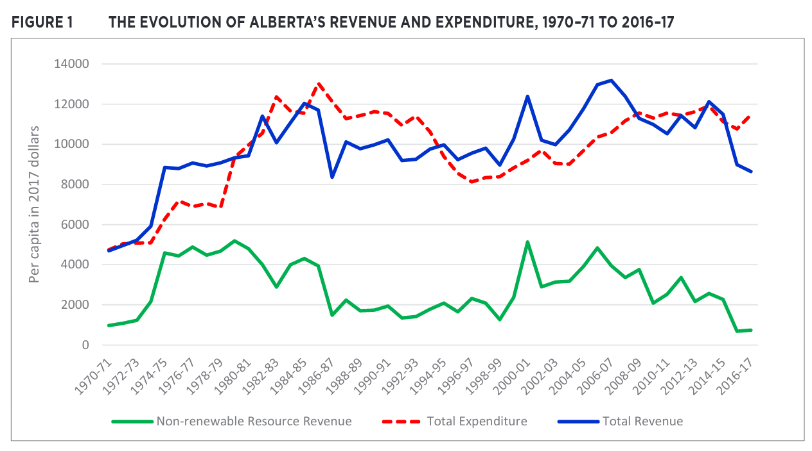
And here’s mine:
df = budget_real_per_capita()
fig1(df)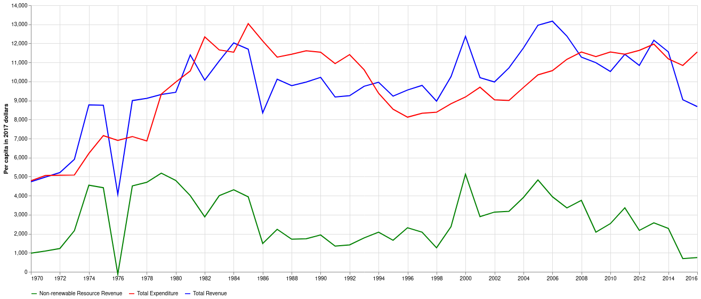
This graph looks very similar to the chart in the paper, with a notable exception of the 1976/1977 budget year. My chart shows Non-renewable Resource Revenue as slightly negative, whereas the original chart has it largely in line with 1975/1976 and 1977/1978. NRR is negative in my chart because I have netted out contributions to the Alberta Heritage Savings Trust Fund (AHSTF). To the best of my understanding, the original paper does the same, and the consistent values between the two in all other years supports that. Quoting the original paper:
The part of resource revenue that is saved in the AHSTF is not expected to influence the provincial government’s spending and revenue-raising choices. For this reason, in our analysis, we exclude the part of the resource revenue that is saved in the AHSTF from the non-renewable-resource revenue data.
For comparison, here is the same chart, but without netting AHSTF contributions from revenue:
no_net_df = (
df
.assign(total_revenue=lambda df: df["total_revenue"] + df["total_heritage"])
.assign(natural_resource_revenue=lambda df: df["natural_resource_revenue"] + df["total_heritage"])
.assign(deficit=lambda df: df["total_expenditure"] - df["total_revenue"])
)
fig1(no_net_df)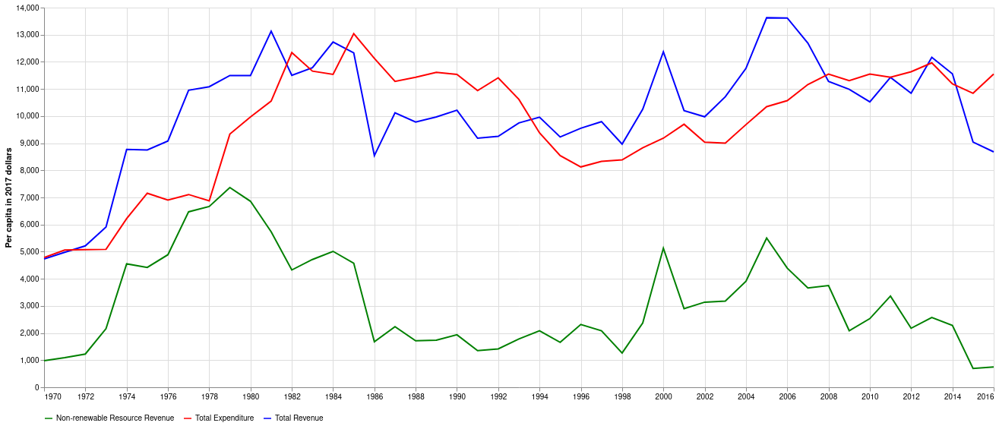
1976/1977 more closely matches the original chart in the paper, but the remaining years in the period of mid 70s to mid 80s when there were significant contributions clearly do not match. Let’s try one more where I just substitute that one year.
error_df = df.copy()
heritage_76 = error_df.loc["1976", "total_heritage"]
error_df.loc["1976", "natural_resource_revenue"] += heritage_76
error_df.loc["1976", "total_revenue"] += heritage_76
error_df.loc["1976", "deficit"] -= heritage_76
fig1(error_df)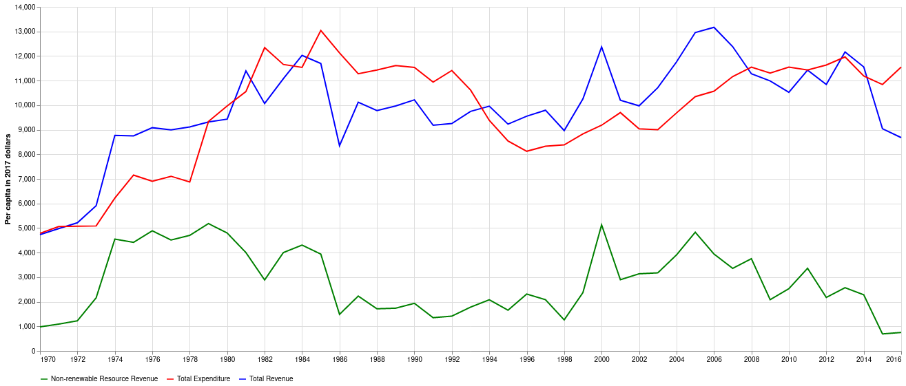
Here’s the original figure again for easier comparison
Image(filename="img/ferede_fig_1.png")
From eyeballing it that looks exactly like Figure 1 in the paper. It appears there’s a data error in the original paper. For the rest of this analysis I’ll compare both my base implementation of the data, as well as the one with the data error.
Figure 2
Page 6 of the paper produces a scatter plot of Real per capita non-renewable resource revenue on the X axis vs. Real per capita budget balance on the Y, along with a linear trend fit.
Code
def fig2(df: pd.DataFrame) -> None:
"""Reproduce Figure 2 from the paper.
Parameters
----------
df: pd.DataFrame
The table with historical revenue and expenditure data.
"""
sns.set(rc={'figure.figsize':(11.7,8.27)})
chart_df = (
df
.loc['1970':'2016', ['natural_resource_revenue', 'deficit']]
.rename(columns={
'natural_resource_revenue': 'Non-renewable Resource Revenue',
'deficit': 'Deficit'
})
.assign(balance=lambda df: df['Deficit'] * -1)
.rename(columns={'balance': 'Budget Balance'})
.copy()
)
sns.regplot(x='Non-renewable Resource Revenue', y='Budget Balance', data=chart_df)Here’s the original figure
Image(filename="img/ferede_fig_2.png")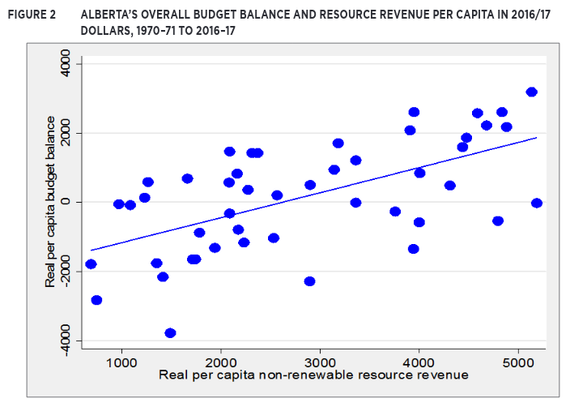
Here’s the figure using my original data:
fig2(df)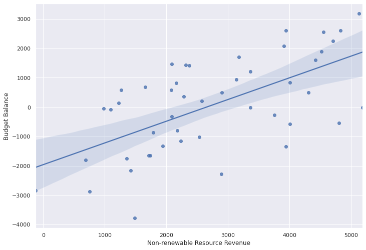
And here’s the figure using the version with a data error:
fig2(error_df)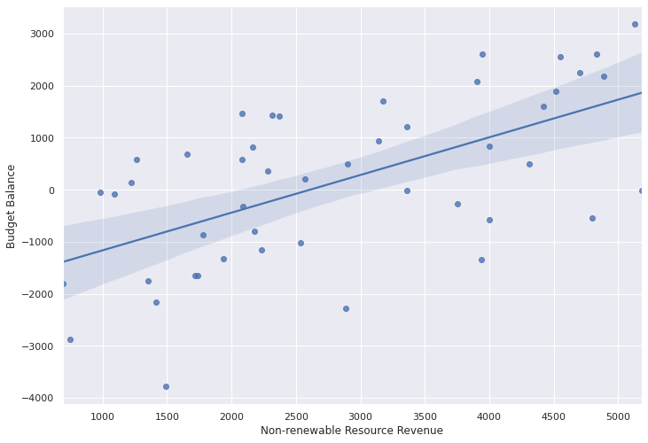
Again, this chart is more consistent with the dataframe where I don’t net heritage fund contributions out of 1976 but do for all other years
Model Specification and estimation
This section combines the previously specified data extraction with transformations necessary to produce summary statistics, statistical tests, and the VAR model itself.
def model_df_levels(budg: pd.DataFrame) -> pd.DataFrame:
"""Combine real per capita budget data to get model data in levels.
lag exogenous variables (unemployment and employment rates, CAD/USD exchange)
Parameters
----------
budg: pd.DataFrame
Budget data, either with or without data error
Returns
-------
pd.DataFrame
Budget data combined with exogenous factors
"""
exog = exogenous_variables()
df = (
pd.concat([budg, exog], axis='columns')
.rename(columns={'total_prog_exp': 'program_expenditure', 'EXCAUS': 'cad_usd'})
.assign(ur_lag=lambda df: df['unemployment_rate'].shift(periods=1))
.assign(er_lag=lambda df: df['employment_rate'].shift(periods=1))
.assign(cad_usd_lag=lambda df: df['cad_usd'].shift(periods=1))
.reindex(columns=[
'program_expenditure', 'debt_service', 'corporate_income_tax',
'personal_income_tax', 'other_revenue', 'natural_resource_revenue',
'deficit', 'heritage_dummy', 'ur_lag', 'er_lag', 'cad_usd_lag'
])
)
return dfmdfl = model_df_levels(df)
mdfl_err = model_df_levels(error_df)Sumary statistics for key variables, 1970-71, 2016-17 in levels
Prior to any modeling, let’s compare the summary statistics for the data sets I’ve created against those in the paper:
Code
number = "{:0<4,.1f}"
percent = '{:.1%}'
count = "{:0.0f}"
def tbl1_level(model_df: pd.DataFrame):
"""Produce summary statistics of the input data in levels.
Parameters
----------
model_df: pd.DataFrame
Input data set
Returns
-------
pd.io.formats.style.Styler:
Nicely formatted summary statistics
"""
df = (
model_df
.loc['1970':'2016']
.copy()
.drop(columns=['heritage_dummy'])
.reindex(columns=[
'natural_resource_revenue', 'corporate_income_tax', 'personal_income_tax',
'other_revenue', 'debt_service', 'program_expenditure', 'deficit', 'ur_lag',
'er_lag', 'cad_usd_lag'
])
.describe()
.T
.style.format({
'count': count,
'mean': number,
'std': number,
'min': number,
'25%': number,
'50%': number,
'75%': number,
'max': number
})
)
return dfHere’s Table 1 from the paper:
Image(filename="img/ferede_tbl_1.png")
Here’s my summary of the top half
tbl1_level(mdfl)| count | mean | std | min | 25% | 50% | 75% | max | |
|---|---|---|---|---|---|---|---|---|
| natural_resource_revenue | 47 | 2,737.2 | 1,358.9 | -125.3 | 1,726.4 | 2,371.7 | 3,941.6 | 5,181.6 |
| corporate_income_tax | 47 | 792.1 | 349.6 | 245.8 | 544.6 | 723.6 | 1,010.9 | 1,560.6 |
| personal_income_tax | 47 | 1,862.1 | 607.8 | 767.1 | 1,403.8 | 1,889.6 | 2,359.8 | 2,830.0 |
| other_revenue | 47 | 4,394.6 | 1,084.9 | 2,352.8 | 3,632.2 | 4,699.2 | 5,209.2 | 5,818.2 |
| debt_service | 47 | 322.8 | 334.9 | 31.4 | 82.7 | 158.5 | 486.9 | 1,075.6 |
| program_expenditure | 47 | 9,399.1 | 2,161.2 | 4,745.8 | 7,623.0 | 10,060.9 | 11,142.6 | 12,869.2 |
| deficit | 47 | -64.0 | 1,618.0 | -3,184.0 | -1,320.5 | -140.6 | 1,092.3 | 3,775.8 |
| ur_lag | 47 | 6.10 | 2.20 | 3.40 | 4.50 | 5.40 | 7.50 | 11.4 |
| er_lag | 47 | 63.7 | 9.90 | 38.5 | 65.1 | 67.3 | 69.0 | 71.8 |
| cad_usd_lag | 45 | 1.20 | 0.20 | 1.00 | 1.10 | 1.20 | 1.40 | 1.60 |
And the same summary on the data with the introduced error
tbl1_level(mdfl_err)| count | mean | std | min | 25% | 50% | 75% | max | |
|---|---|---|---|---|---|---|---|---|
| natural_resource_revenue | 47 | 2,843.8 | 1,325.6 | 691.9 | 1,760.7 | 2,532.1 | 3,972.6 | 5,181.6 |
| corporate_income_tax | 47 | 792.1 | 349.6 | 245.8 | 544.6 | 723.6 | 1,010.9 | 1,560.6 |
| personal_income_tax | 47 | 1,862.1 | 607.8 | 767.1 | 1,403.8 | 1,889.6 | 2,359.8 | 2,830.0 |
| other_revenue | 47 | 4,394.6 | 1,084.9 | 2,352.8 | 3,632.2 | 4,699.2 | 5,209.2 | 5,818.2 |
| debt_service | 47 | 322.8 | 334.9 | 31.4 | 82.7 | 158.5 | 486.9 | 1,075.6 |
| program_expenditure | 47 | 9,399.1 | 2,161.2 | 4,745.8 | 7,623.0 | 10,060.9 | 11,142.6 | 12,869.2 |
| deficit | 47 | -170.7 | 1,587.7 | -3,184.0 | -1,425.7 | -202.8 | 945.9 | 3,775.8 |
| ur_lag | 47 | 6.10 | 2.20 | 3.40 | 4.50 | 5.40 | 7.50 | 11.4 |
| er_lag | 47 | 63.7 | 9.90 | 38.5 | 65.1 | 67.3 | 69.0 | 71.8 |
| cad_usd_lag | 45 | 1.20 | 0.20 | 1.00 | 1.10 | 1.20 | 1.40 | 1.60 |
All the figures that I can validate against (exogenous variables aren’t reported in the paper) are reasonably close. The one noted difference is the previously described outlier in natural resource revenue which leads to my minimum for that variable being significantly lower than in the paper. That large one goes away again if I introduce the same data error described above. My guess for the remaining small discrepancies are differences in calculating population or CPI.
Sumary statistics for key variables, 1970-71, 2016-17, first difference
Reproduce the bottom half of table 1 from the paper
Code
def model_df_first_diff(mdfl: pd.DataFrame) -> pd.DataFrame:
"""Produce the first difference of the level model df.
Parameters
----------
mdfl: pd.DataFrame
The model dataframe in levels
Returns
-------
pd.DataFrame
The first differenced model dataframe
"""
df = (
mdfl
.diff()
.loc['1970':'2016']
.copy()
.assign(heritage_dummy=mdfl['heritage_dummy']) # don't want to lag diff this
.assign(constant=1)
.assign(zero=0)
.assign(nrrd=lambda df: df[['natural_resource_revenue', 'zero']].min(axis='columns'))
.assign(nrri=lambda df: df[['natural_resource_revenue', 'zero']].max(axis='columns'))
.reindex(columns=[
'natural_resource_revenue', 'nrri', 'nrrd', 'corporate_income_tax', 'personal_income_tax',
'other_revenue', 'debt_service', 'program_expenditure', 'deficit', 'ur_lag',
'er_lag', 'cad_usd_lag', 'heritage_dummy', 'constant'
])
)
return dfCode
def tbl1_diff(model_df: pd.DataFrame) -> pd.io.formats.style.Styler:
"""Produce summary statistics of the first differenced data set.
Parameters
----------
model_df: pd.DataFrame
Input data set
Returns
-------
pd.io.formats.style.Styler:
Nicely styled summary statistics
"""
df = (
model_df_first_diff(model_df)
.drop(columns=['heritage_dummy', 'constant'])
.describe()
.T
.style.format({
'count': count,
'mean': number,
'std': number,
'min': number,
'25%': number,
'50%': number,
'75%': number,
'max': number
})
)
return dfHere’s Table 1 from the paper again:
Image(filename="img/ferede_tbl_1.png")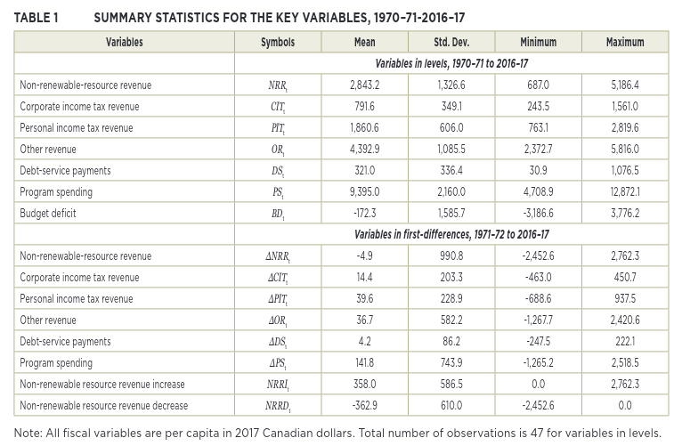
Here’s mine:
tbl1_diff(mdfl)| count | mean | std | min | 25% | 50% | 75% | max | |
|---|---|---|---|---|---|---|---|---|
| natural_resource_revenue | 47 | -8.3 | 1,365.3 | -4,543.2 | -551.3 | 64.2 | 463.5 | 4,638.7 |
| nrri | 47 | 437.8 | 852.9 | 0.00 | 0.00 | 64.2 | 463.5 | 4,638.7 |
| nrrd | 47 | -446.1 | 858.9 | -4,543.2 | -551.3 | 0.00 | 0.00 | 0.00 |
| corporate_income_tax | 47 | 13.3 | 201.2 | -463.0 | -108.5 | 25.9 | 137.8 | 447.1 |
| personal_income_tax | 47 | 42.7 | 227.2 | -690.7 | -28.7 | 40.0 | 154.2 | 936.9 |
| other_revenue | 47 | 41.8 | 577.2 | -1,268.7 | -288.9 | -28.0 | 162.8 | 2,417.6 |
| debt_service | 47 | 4.50 | 86.2 | -247.5 | -21.6 | 2.00 | 36.0 | 222.3 |
| program_expenditure | 47 | 147.4 | 734.5 | -1,263.2 | -245.9 | 202.7 | 552.7 | 2,477.9 |
| deficit | 47 | 62.3 | 1,578.2 | -4,722.8 | -806.6 | -39.0 | 836.0 | 4,431.3 |
| ur_lag | 47 | 0.10 | 1.10 | -1.8 | -0.7 | -0.1 | 0.30 | 3.90 |
| er_lag | 47 | 0.60 | 3.30 | -3.2 | -0.2 | 0.40 | 0.90 | 21.4 |
| cad_usd_lag | 44 | 0.00 | 0.10 | -0.2 | -0.0 | 0.00 | 0.10 | 0.20 |
And with the data error:
tbl1_diff(mdfl_err)| count | mean | std | min | 25% | 50% | 75% | max | |
|---|---|---|---|---|---|---|---|---|
| natural_resource_revenue | 47 | -8.3 | 977.5 | -2,451.6 | -471.1 | 64.2 | 458.3 | 2,757.8 |
| nrri | 47 | 349.1 | 579.4 | 0.00 | 0.00 | 64.2 | 458.3 | 2,757.8 |
| nrrd | 47 | -357.4 | 604.0 | -2,451.6 | -471.1 | 0.00 | 0.00 | 0.00 |
| corporate_income_tax | 47 | 13.3 | 201.2 | -463.0 | -108.5 | 25.9 | 137.8 | 447.1 |
| personal_income_tax | 47 | 42.7 | 227.2 | -690.7 | -28.7 | 40.0 | 154.2 | 936.9 |
| other_revenue | 47 | 41.8 | 577.2 | -1,268.7 | -288.9 | -28.0 | 162.8 | 2,417.6 |
| debt_service | 47 | 4.50 | 86.2 | -247.5 | -21.6 | 2.00 | 36.0 | 222.3 |
| program_expenditure | 47 | 147.4 | 734.5 | -1,263.2 | -245.9 | 202.7 | 552.7 | 2,477.9 |
| deficit | 47 | 62.3 | 1,260.2 | -2,615.7 | -758.1 | -39.0 | 747.4 | 3,117.0 |
| ur_lag | 47 | 0.10 | 1.10 | -1.8 | -0.7 | -0.1 | 0.30 | 3.90 |
| er_lag | 47 | 0.60 | 3.30 | -3.2 | -0.2 | 0.40 | 0.90 | 21.4 |
| cad_usd_lag | 44 | 0.00 | 0.10 | -0.2 | -0.0 | 0.00 | 0.10 | 0.20 |
As with everything so far, the data overall matches, and Natural Resource Revenue matches a lot better if I neglect to net out the heritage fund in 1976.
Unit-Root Tests
Table A1 in the paper shows the results of unit root tests for both the level and first differenced variables in the model. This section will reproduce those tables
def stationarity_tests(df: pd.DataFrame, first_diff: bool = False) -> pd.DataFrame:
"""Compute stationarity test statistics.
Parameters
----------
df: pd.DataFrame
The model input data
first_diff: bool, default False
Perform tests on first differenced version of the data
"""
if first_diff:
df = (
model_df_first_diff(df)
.drop(columns=["heritage_dummy", "constant"])
)
else:
df = (
df
.loc['1970':'2016']
.copy()
.drop(columns=['heritage_dummy'])
.reindex(
columns=[
'natural_resource_revenue',
'corporate_income_tax',
'personal_income_tax',
'other_revenue',
'debt_service',
'program_expenditure',
'deficit',
'ur_lag',
'er_lag',
'cad_usd_lag',
]
)
)
tests_dict = {'ADF': ADF, 'Phillips-Perron': PhillipsPerron, 'DF-GLS': DFGLS}
cols = df.columns
tests_df = pd.DataFrame()
for test_label, test in tests_dict.items():
for col in cols:
if test_label != 'Phillips-Perron':
col_test = test(df[col].dropna(), method='BIC')
else:
col_test = test(df[col].dropna())
test_val = col_test.stat
test_p = col_test.pvalue
test_summary = f'val: {test_val:0.3f}, p: {test_p:.1%}'
tests_df.loc[col, test_label] = test_summary
return tests_dfHere’s the table from the paper:
Image(filename="img/ferede_tbl_a1.png")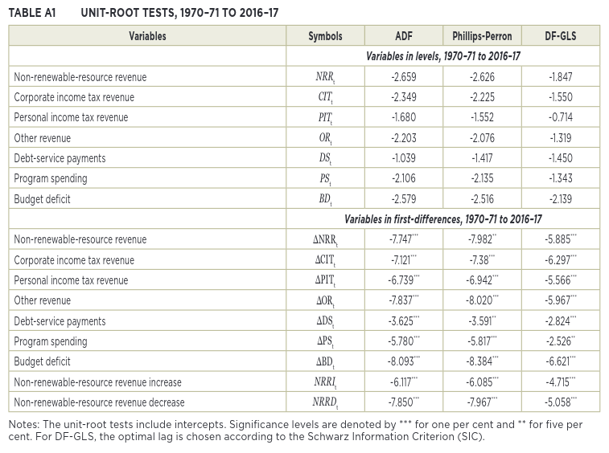
Here is mine with my data set
stationarity_tests(mdfl, first_diff=False)| ADF | Phillips-Perron | DF-GLS | |
|---|---|---|---|
| natural_resource_revenue | val: -3.927, p: 0.2% | val: -4.056, p: 0.1% | val: -3.125, p: 0.2% |
| corporate_income_tax | val: -2.340, p: 15.9% | val: -2.285, p: 17.7% | val: -1.676, p: 9.2% |
| personal_income_tax | val: -1.650, p: 45.7% | val: -1.440, p: 56.3% | val: -0.688, p: 43.2% |
| other_revenue | val: -2.196, p: 20.8% | val: -2.057, p: 26.2% | val: -1.585, p: 11.0% |
| debt_service | val: -1.548, p: 51.0% | val: -1.697, p: 43.3% | val: -1.377, p: 16.2% |
| program_expenditure | val: -2.966, p: 3.8% | val: -2.137, p: 23.0% | val: -0.682, p: 43.4% |
| deficit | val: -3.510, p: 0.8% | val: -3.924, p: 0.2% | val: -3.537, p: 0.0% |
| ur_lag | val: -2.709, p: 7.3% | val: -2.071, p: 25.6% | val: -2.319, p: 2.1% |
| er_lag | val: -10.652, p: 0.0% | val: -2.931, p: 4.2% | val: -0.763, p: 39.7% |
| cad_usd_lag | val: -2.454, p: 12.7% | val: -1.796, p: 38.2% | val: -1.870, p: 6.1% |
stationarity_tests(mdfl, first_diff=True)| ADF | Phillips-Perron | DF-GLS | |
|---|---|---|---|
| natural_resource_revenue | val: -7.403, p: 0.0% | val: -10.300, p: 0.0% | val: -7.430, p: 0.0% |
| nrri | val: -6.885, p: 0.0% | val: -6.896, p: 0.0% | val: -6.533, p: 0.0% |
| nrrd | val: -7.835, p: 0.0% | val: -9.218, p: 0.0% | val: -7.634, p: 0.0% |
| corporate_income_tax | val: -7.228, p: 0.0% | val: -8.484, p: 0.0% | val: -7.103, p: 0.0% |
| personal_income_tax | val: -5.560, p: 0.0% | val: -8.831, p: 0.0% | val: -6.703, p: 0.0% |
| other_revenue | val: -7.914, p: 0.0% | val: -8.169, p: 0.0% | val: -7.717, p: 0.0% |
| debt_service | val: -3.918, p: 0.2% | val: -4.252, p: 0.1% | val: -3.931, p: 0.0% |
| program_expenditure | val: -2.545, p: 10.5% | val: -6.105, p: 0.0% | val: -2.461, p: 1.4% |
| deficit | val: -2.485, p: 11.9% | val: -10.105, p: 0.0% | val: -2.509, p: 1.2% |
| ur_lag | val: -4.924, p: 0.0% | val: -4.056, p: 0.1% | val: -4.901, p: 0.0% |
| er_lag | val: -2.697, p: 7.5% | val: -6.507, p: 0.0% | val: -2.742, p: 0.6% |
| cad_usd_lag | val: -3.318, p: 1.4% | val: -3.042, p: 3.1% | val: -3.384, p: 0.1% |
And with the error data set:
stationarity_tests(mdfl_err, first_diff=False)| ADF | Phillips-Perron | DF-GLS | |
|---|---|---|---|
| natural_resource_revenue | val: -2.652, p: 8.3% | val: -2.875, p: 4.8% | val: -2.113, p: 3.5% |
| corporate_income_tax | val: -2.340, p: 15.9% | val: -2.285, p: 17.7% | val: -1.676, p: 9.2% |
| personal_income_tax | val: -1.650, p: 45.7% | val: -1.440, p: 56.3% | val: -0.688, p: 43.2% |
| other_revenue | val: -2.196, p: 20.8% | val: -2.057, p: 26.2% | val: -1.585, p: 11.0% |
| debt_service | val: -1.548, p: 51.0% | val: -1.697, p: 43.3% | val: -1.377, p: 16.2% |
| program_expenditure | val: -2.966, p: 3.8% | val: -2.137, p: 23.0% | val: -0.682, p: 43.4% |
| deficit | val: -2.566, p: 10.0% | val: -2.763, p: 6.4% | val: -2.606, p: 0.9% |
| ur_lag | val: -2.709, p: 7.3% | val: -2.071, p: 25.6% | val: -2.319, p: 2.1% |
| er_lag | val: -10.652, p: 0.0% | val: -2.931, p: 4.2% | val: -0.763, p: 39.7% |
| cad_usd_lag | val: -2.454, p: 12.7% | val: -1.796, p: 38.2% | val: -1.870, p: 6.1% |
stationarity_tests(mdfl_err, first_diff=True)| ADF | Phillips-Perron | DF-GLS | |
|---|---|---|---|
| natural_resource_revenue | val: -5.913, p: 0.0% | val: -7.791, p: 0.0% | val: -5.925, p: 0.0% |
| nrri | val: -6.119, p: 0.0% | val: -6.149, p: 0.0% | val: -5.731, p: 0.0% |
| nrrd | val: -7.846, p: 0.0% | val: -8.008, p: 0.0% | val: -7.640, p: 0.0% |
| corporate_income_tax | val: -7.228, p: 0.0% | val: -8.484, p: 0.0% | val: -7.103, p: 0.0% |
| personal_income_tax | val: -5.560, p: 0.0% | val: -8.831, p: 0.0% | val: -6.703, p: 0.0% |
| other_revenue | val: -7.914, p: 0.0% | val: -8.169, p: 0.0% | val: -7.717, p: 0.0% |
| debt_service | val: -3.918, p: 0.2% | val: -4.252, p: 0.1% | val: -3.931, p: 0.0% |
| program_expenditure | val: -2.545, p: 10.5% | val: -6.105, p: 0.0% | val: -2.461, p: 1.4% |
| deficit | val: -6.642, p: 0.0% | val: -8.574, p: 0.0% | val: -6.609, p: 0.0% |
| ur_lag | val: -4.924, p: 0.0% | val: -4.056, p: 0.1% | val: -4.901, p: 0.0% |
| er_lag | val: -2.697, p: 7.5% | val: -6.507, p: 0.0% | val: -2.742, p: 0.6% |
| cad_usd_lag | val: -3.318, p: 1.4% | val: -3.042, p: 3.1% | val: -3.384, p: 0.1% |
Documentation on the test tools I used can be found here
There are some interesting differences. Most notable is that on the levels of the deficit series I reject the null hypothesis of a unit root using all three tests at a significance level < 1%. The paper specifically notes that if the deficit is stationary in levels then a Vector Error Correction model can be applied. As the original author’s fails to reject the null he implements a Vector AutoRegression model on the first differenced data. In levels the only other series that I find to be stationary is natural resource revenue. ADF on program expenditure would also reject the null at 5% significance, but would fail to reject it using the other two tests.
Looking at the first differenced series, since that’s what the paper ultimately ends up using, I also reject the null hypothesis of a unit root for all variables using all tests at a 1% significant except program expenditure and deficit using Augmented Dickey Fuller. Those last two tests differ from what’s reported in the paper.
The paper notes that it uses the Schwarz Information Criterion (SIC) for determining optimal lags in the DF-GLS test. It doesn’t specify what it’s using in the other two tests. For ADF and DF-GLS I used the Schwarz/Bayesian IC (BIC), which is just another name for SIC. Phillips-Perron only uses 1 lag and then Newey-West for a long run variance estimator. I also ran these tests using Akaike IC (AIC) for optimal lags for ADF and DF-GLS, with similar results.
Again we can see that using the results with the data error more closely matches the table in the paper, specifically around resource revenue and deficits.
The Model
The conclusions from the paper are based on fitting a VAR to the first differenced data set we’ve been analyzing above. Let’s do that now and compare the results to the paper.
def fit_var(mdfl: pd.DataFrame) -> statsmodels.tsa.vector_ar.var_model.VARResults:
"""Fit a VAR to the model data.
Parameters
----------
mdfl: pd.DataFrame
Input model data
Returns
-------
statsmodels.tsa.vector_ar.var_model.VarResults
The fitted model
"""
vec_df = (
model_df_first_diff(mdfl)
.drop(columns='natural_resource_revenue')
.dropna()
)
endog_df = vec_df[[
'nrri', 'nrrd', 'program_expenditure', 'debt_service', 'corporate_income_tax',
'personal_income_tax', 'other_revenue'
]]
exog_df = vec_df[['ur_lag', 'er_lag', 'cad_usd_lag', 'heritage_dummy']]
model = VAR(endog=endog_df, exog=exog_df, freq='AS')
# Fit the model with 2 lags
results = model.fit(2)
return resultsCode
def highlight_significance(val):
"""Colour code statistical significance.
Takes a scalar and returns a string with
the css property `'color: <color>'` where
color is maroon for 1% significance,
red for 5% significance,
orange for 10%, and black otherwise
Parameters
----------
val: float
The p value of a test
Returns
-------
str:
A formatted colour coded p value
"""
if val <= 0.01:
color = 'maroon'
elif val <= 0.05:
color = 'red'
elif val <= 0.1:
color = 'orange'
else:
color = 'black'
return f'color: {color}'results = fit_var(mdfl)
results_err = fit_var(mdfl_err)
summary = results.summary()# Set up the rows and columns of my parameters to match the paper
reindex_cols = ["program_expenditure", "debt_service", "corporate_income_tax", "personal_income_tax", "other_revenue", "nrri", "nrrd"]
index_order = ["nrri", "nrrd", "program_expenditure", "debt_service", "corporate_income_tax", "personal_income_tax", "other_revenue"]
reindex_rows = list(chain.from_iterable((f"L1.{row}", f"L2.{row}") for row in index_order))Here’s the table from the paper:
Image(filename="img/ferede_tbl_a2.png")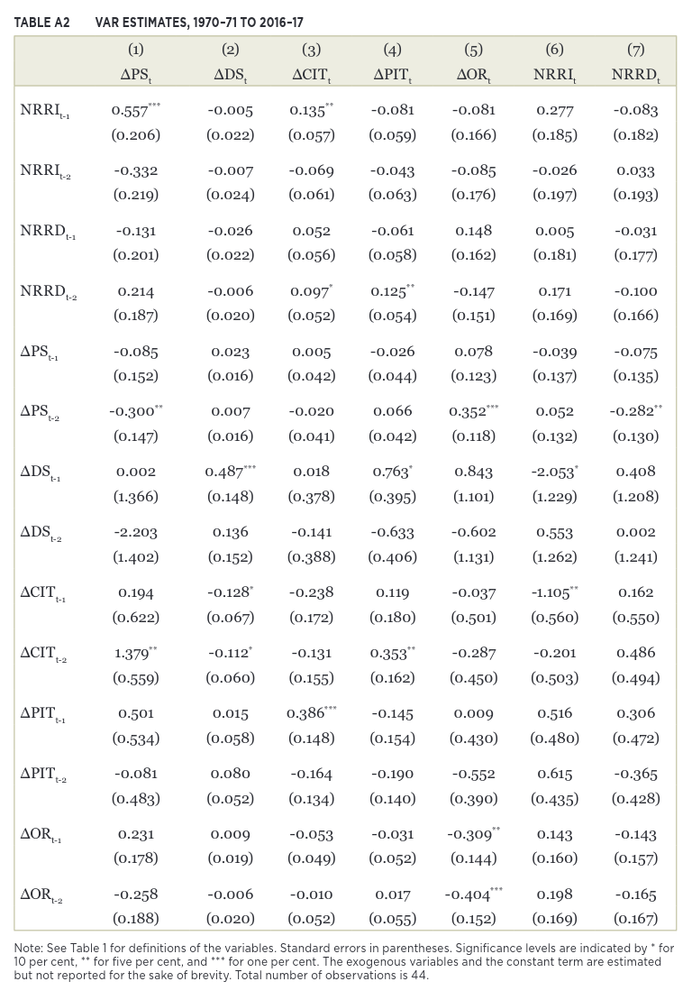
results.params.reindex(index=reindex_rows, columns=reindex_cols)| program_expenditure | debt_service | corporate_income_tax | personal_income_tax | other_revenue | nrri | nrrd | |
|---|---|---|---|---|---|---|---|
| L1.nrri | 0.307014 | -0.028267 | 0.081846 | -0.052581 | -0.197417 | 0.157775 | 0.002814 |
| L2.nrri | 0.328607 | 0.006210 | -0.044256 | -0.031283 | -0.073461 | 0.059988 | -0.052033 |
| L1.nrrd | 0.131802 | -0.034380 | 0.026578 | -0.144894 | 0.193682 | -0.067386 | -0.333322 |
| L2.nrrd | 0.353466 | -0.020362 | 0.089569 | -0.037287 | -0.147460 | 0.110970 | -0.055394 |
| L1.program_expenditure | -0.089949 | 0.024739 | -0.000802 | -0.053868 | 0.070080 | -0.065026 | -0.105625 |
| L2.program_expenditure | -0.262484 | 0.009716 | -0.031223 | 0.042743 | 0.410439 | 0.025392 | -0.456895 |
| L1.debt_service | 0.794685 | 0.401266 | -0.108643 | 0.336733 | 0.400447 | -2.370450 | -0.278888 |
| L2.debt_service | -2.693856 | 0.228409 | -0.088742 | -0.179124 | -0.041884 | 0.290135 | -0.215989 |
| L1.corporate_income_tax | -0.972853 | -0.092308 | -0.210123 | 0.169059 | -0.071714 | -0.914462 | 0.730905 |
| L2.corporate_income_tax | 0.088413 | -0.199031 | -0.206852 | 0.245321 | -0.509617 | -0.683630 | -0.578293 |
| L1.personal_income_tax | 0.959002 | -0.041882 | 0.292569 | -0.378646 | -0.250158 | 0.347750 | 0.862515 |
| L2.personal_income_tax | 0.814557 | 0.084507 | -0.112748 | -0.099020 | -0.528812 | 0.385575 | -0.226230 |
| L1.other_revenue | 0.347131 | -0.015834 | -0.042866 | -0.022883 | -0.296401 | 0.224576 | -0.102018 |
| L2.other_revenue | -0.140592 | -0.010601 | -0.009822 | -0.010749 | -0.339955 | 0.385613 | 0.043835 |
results.pvalues.reindex(index=reindex_rows, columns=reindex_cols).style.applymap(highlight_significance).format("{:.2%}")| program_expenditure | debt_service | corporate_income_tax | personal_income_tax | other_revenue | nrri | nrrd | |
|---|---|---|---|---|---|---|---|
| L1.nrri | 17.85% | 28.23% | 19.05% | 46.54% | 31.40% | 35.35% | 99.27% |
| L2.nrri | 3.41% | 72.82% | 29.76% | 52.28% | 58.14% | 60.37% | 80.42% |
| L1.nrrd | 54.73% | 17.31% | 65.78% | 3.61% | 30.34% | 67.97% | 26.07% |
| L2.nrrd | 8.86% | 39.46% | 11.53% | 56.93% | 40.83% | 47.32% | 84.37% |
| L1.program_expenditure | 63.72% | 26.03% | 98.78% | 37.09% | 66.89% | 64.73% | 68.24% |
| L2.program_expenditure | 16.67% | 65.69% | 54.83% | 47.56% | 1.18% | 85.75% | 7.53% |
| L1.debt_service | 62.80% | 3.37% | 80.89% | 51.54% | 77.63% | 5.24% | 90.00% |
| L2.debt_service | 9.99% | 22.60% | 84.32% | 72.89% | 97.63% | 81.21% | 92.24% |
| L1.corporate_income_tax | 17.66% | 26.58% | 28.68% | 45.69% | 90.77% | 8.83% | 45.31% |
| L2.corporate_income_tax | 90.24% | 1.66% | 29.52% | 28.12% | 41.09% | 20.34% | 55.35% |
| L1.personal_income_tax | 11.91% | 55.47% | 8.27% | 5.12% | 63.61% | 44.83% | 30.03% |
| L2.personal_income_tax | 12.28% | 16.47% | 43.56% | 55.23% | 24.36% | 32.70% | 75.15% |
| L1.other_revenue | 11.25% | 52.98% | 47.45% | 74.03% | 11.48% | 16.83% | 73.04% |
| L2.other_revenue | 54.20% | 68.98% | 87.64% | 88.26% | 8.61% | 2.48% | 88.83% |
results_err.params.reindex(index=reindex_rows, columns=reindex_cols)| program_expenditure | debt_service | corporate_income_tax | personal_income_tax | other_revenue | nrri | nrrd | |
|---|---|---|---|---|---|---|---|
| L1.nrri | 0.531582 | -0.024542 | 0.107731 | -0.123072 | -0.150617 | 0.208281 | -0.080868 |
| L2.nrri | -0.184916 | -0.003392 | -0.079855 | -0.031832 | -0.134564 | 0.023580 | 0.076075 |
| L1.nrrd | -0.164689 | -0.033454 | 0.002593 | -0.085661 | 0.110608 | -0.058941 | -0.105753 |
| L2.nrrd | 0.179398 | -0.020179 | 0.072508 | 0.027891 | -0.178763 | 0.081864 | -0.032297 |
| L1.program_expenditure | -0.148569 | 0.024375 | 0.010583 | -0.035676 | 0.095480 | -0.051153 | -0.027252 |
| L2.program_expenditure | -0.274168 | 0.012469 | -0.028204 | 0.060072 | 0.419366 | 0.043190 | -0.266589 |
| L1.debt_service | -0.138827 | 0.391381 | -0.192682 | 0.456206 | 0.250624 | -2.379002 | 0.182134 |
| L2.debt_service | -1.839879 | 0.244616 | 0.030729 | -0.321701 | 0.208719 | 0.387627 | 0.026273 |
| L1.corporate_income_tax | -0.591167 | -0.087419 | -0.166213 | 0.193455 | -0.009423 | -1.069105 | 0.084121 |
| L2.corporate_income_tax | 0.986182 | -0.171169 | -0.180347 | 0.219469 | -0.439124 | -0.441616 | 0.337464 |
| L1.personal_income_tax | 0.446547 | -0.050872 | 0.281996 | -0.364826 | -0.291701 | 0.365623 | 0.499642 |
| L2.personal_income_tax | 0.537147 | 0.068406 | -0.161794 | -0.159843 | -0.598672 | 0.542697 | -0.054906 |
| L1.other_revenue | 0.319686 | -0.014068 | -0.036482 | -0.021636 | -0.280981 | 0.235076 | -0.052564 |
| L2.other_revenue | -0.328932 | -0.009975 | -0.017606 | 0.013375 | -0.362590 | 0.255418 | -0.122366 |
results_err.pvalues.reindex(index=reindex_rows, columns=reindex_cols).style.applymap(highlight_significance).format("{:.2%}")| program_expenditure | debt_service | corporate_income_tax | personal_income_tax | other_revenue | nrri | nrrd | |
|---|---|---|---|---|---|---|---|
| L1.nrri | 6.09% | 42.34% | 12.95% | 12.90% | 50.73% | 26.95% | 75.32% |
| L2.nrri | 53.56% | 91.63% | 28.56% | 70.91% | 57.36% | 90.54% | 77.87% |
| L1.nrrd | 54.19% | 25.17% | 96.94% | 26.71% | 60.91% | 74.28% | 66.59% |
| L2.nrrd | 49.68% | 47.94% | 27.30% | 71.17% | 39.79% | 64.10% | 89.27% |
| L1.program_expenditure | 47.97% | 28.33% | 84.07% | 55.26% | 57.06% | 71.44% | 88.63% |
| L2.program_expenditure | 18.15% | 57.39% | 58.33% | 30.58% | 1.07% | 75.16% | 15.20% |
| L1.debt_service | 93.96% | 4.82% | 67.48% | 38.39% | 86.44% | 5.10% | 91.27% |
| L2.debt_service | 31.50% | 21.64% | 94.66% | 53.88% | 88.68% | 75.02% | 98.74% |
| L1.corporate_income_tax | 47.78% | 33.14% | 42.56% | 41.64% | 98.87% | 5.35% | 91.13% |
| L2.corporate_income_tax | 17.90% | 3.09% | 32.66% | 29.54% | 45.50% | 36.55% | 61.21% |
| L1.personal_income_tax | 51.65% | 49.41% | 10.20% | 6.37% | 59.67% | 42.44% | 42.34% |
| L2.personal_income_tax | 39.82% | 31.95% | 30.98% | 37.91% | 23.97% | 19.93% | 92.41% |
| L1.other_revenue | 16.84% | 57.49% | 53.04% | 74.43% | 13.07% | 12.78% | 80.28% |
| L2.other_revenue | 18.72% | 71.13% | 77.81% | 85.12% | 6.95% | 12.35% | 58.85% |
Once again, my results with the data error included are much closer to the original paper results. Note that without the data error, program spending is shown to rise in response to an increase or decrease in natural resource revenue, but only on the second lag (at least at a statistically significant level. That’s completely contrary to the main thesis of the paper. Now, given that I’ve shown with the corrected data set that budget deficits are stationary in levels, maybe a more appropriate form of analysis would have been to use a VECM as the paper states it would have been, but from this I can say that the data error has led to a significant change in the outcome of the analysis.
Impulse Response Functions
The actual results of the paper involve taking the estimated impulse response functions derived from the VAR model and examining their implications. Given the results above I’m not sure there’s a lot of value in reproducing all of the other results of this model, but I do want to at least reproduce the IRFs.
Code
def irf_tbl(result: statsmodels.tsa.vector_ar.var_model.VARResults, impulse: str) -> pd.DataFrame:
"""Show the IRF as in table 3 of the paper.
Parameters
----------
result: statsmodels.tsa.vector_ar.var_model.VARResults
The fitted VAR
impulse: str
The impulse function, either an increase or decrease in natural resource revenue
Returns
-------
pd.DataFrame
A summary table
"""
irf = result.irf()
irf_stderr = irf.stderr()
irfs = irf.irfs
params = list(results.params.columns)
def _impulse_response(impulse: str, response: str) -> pd.DataFrame:
"""Get a specific IRF out of the big array.
Parameters
----------
impulse: str
The impulse function
response: str
The response function
Returns
-------
pd.DataFrame
The 3 period IRF
"""
imp_ind = params.index(impulse)
res_ind = params.index(response)
ir = irfs[:, res_ind, imp_ind]
se = irf_stderr[:, res_ind, imp_ind]
imp_name = response + '_impulse'
se_name = response + '_se'
df = pd.DataFrame({imp_name: ir, se_name: se})
return df.loc[1:3].T
responses = params[2:]
return pd.concat([_impulse_response(impulse, response) for response in responses])Table 3
IMPACTS ON ALBERTA’S BUDGET OF A ONE-DOLLAR INNOVATION IN NON-RENEWABLE-RESOURCE REVENUE (ASYMMETRIC CASE), 1970/71–2016/17
Image(filename="img/ferede_tbl_3.png")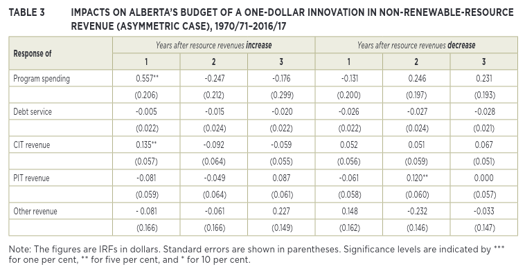
irf_tbl(results, "nrrd")| 1 | 2 | 3 | |
|---|---|---|---|
| program_expenditure_impulse | 0.131802 | 0.152091 | -0.263057 |
| program_expenditure_se | 0.219009 | 0.213435 | 0.189561 |
| debt_service_impulse | -0.034380 | -0.016984 | -0.025572 |
| debt_service_se | 0.025235 | 0.026153 | 0.023777 |
| corporate_income_tax_impulse | 0.026578 | 0.022545 | 0.014045 |
| corporate_income_tax_se | 0.060010 | 0.062050 | 0.049948 |
| personal_income_tax_impulse | -0.144894 | 0.050801 | 0.023045 |
| personal_income_tax_se | 0.069135 | 0.090279 | 0.082072 |
| other_revenue_impulse | 0.193682 | -0.226313 | 0.116648 |
| other_revenue_se | 0.188179 | 0.190130 | 0.169276 |
irf_tbl(results, "nrri")| 1 | 2 | 3 | |
|---|---|---|---|
| program_expenditure_impulse | 0.307014 | 0.128759 | 0.032942 |
| program_expenditure_se | 0.228184 | 0.200129 | 0.172849 |
| debt_service_impulse | -0.028267 | -0.004321 | -0.011658 |
| debt_service_se | 0.026292 | 0.026157 | 0.025746 |
| corporate_income_tax_impulse | 0.081846 | -0.052562 | -0.019982 |
| corporate_income_tax_se | 0.062524 | 0.057369 | 0.041195 |
| personal_income_tax_impulse | -0.052581 | -0.027779 | 0.040890 |
| personal_income_tax_se | 0.072031 | 0.085436 | 0.068562 |
| other_revenue_impulse | -0.197417 | -0.028068 | 0.187637 |
| other_revenue_se | 0.196063 | 0.172347 | 0.147472 |
irf_tbl(results_err, "nrrd")| 1 | 2 | 3 | |
|---|---|---|---|
| program_expenditure_impulse | -0.164689 | 0.190170 | 0.024520 |
| program_expenditure_se | 0.270039 | 0.264733 | 0.231589 |
| debt_service_impulse | -0.033454 | -0.029727 | -0.027865 |
| debt_service_se | 0.029185 | 0.033489 | 0.028892 |
| corporate_income_tax_impulse | 0.002593 | 0.041965 | 0.055297 |
| corporate_income_tax_se | 0.067657 | 0.068952 | 0.054178 |
| personal_income_tax_impulse | -0.085661 | 0.064177 | -0.029006 |
| personal_income_tax_se | 0.077188 | 0.085444 | 0.072486 |
| other_revenue_impulse | 0.110608 | -0.211807 | -0.018863 |
| other_revenue_se | 0.216285 | 0.206303 | 0.197149 |
irf_tbl(results_err, "nrri")| 1 | 2 | 3 | |
|---|---|---|---|
| program_expenditure_impulse | 0.531582 | -0.303243 | -0.034754 |
| program_expenditure_se | 0.283645 | 0.282106 | 0.247443 |
| debt_service_impulse | -0.024542 | -0.003484 | -0.020839 |
| debt_service_se | 0.030655 | 0.033327 | 0.030126 |
| corporate_income_tax_impulse | 0.107731 | -0.094389 | -0.033291 |
| corporate_income_tax_se | 0.071066 | 0.074045 | 0.058701 |
| personal_income_tax_impulse | -0.123072 | -0.011699 | 0.079664 |
| personal_income_tax_se | 0.081077 | 0.093111 | 0.078465 |
| other_revenue_impulse | -0.150617 | -0.053069 | 0.289039 |
| other_revenue_se | 0.227183 | 0.225741 | 0.202924 |
Same patters as we’ve seen above, the results with the data error included are pretty close to what the paper reports.
Plot the IRFs
Ok, this is the last bit I want to reproduce, just because IRF charts look cool so it would be a shame to leave them out.
Image(filename="img/ferede_fig_3.png")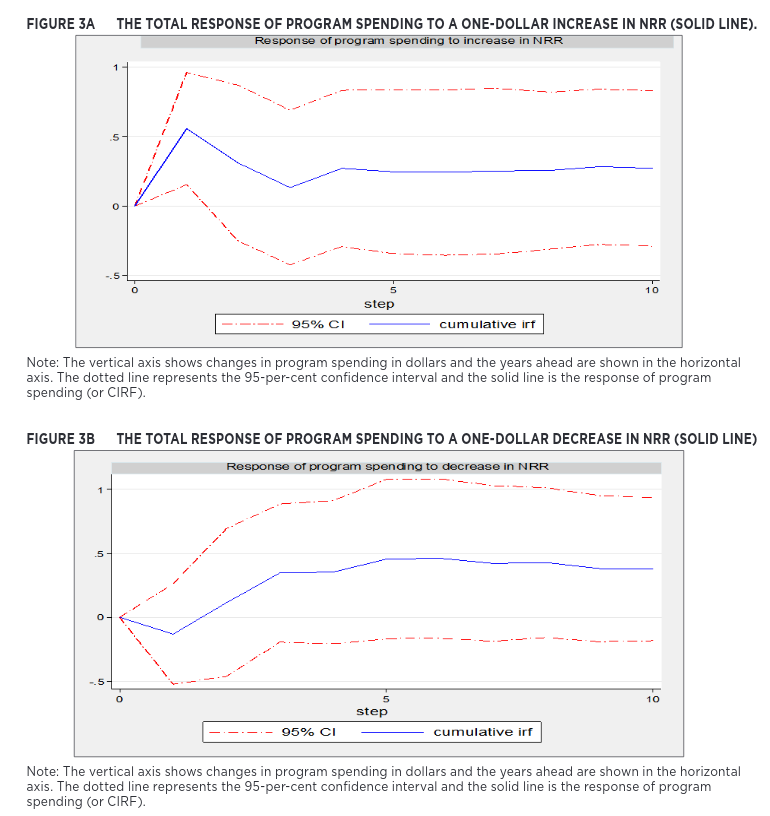
results.irf().plot(impulse='nrri', response='program_expenditure');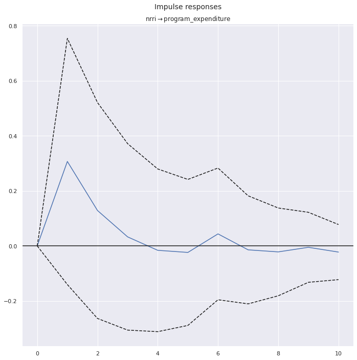
results.irf().plot(impulse='nrrd', response='program_expenditure');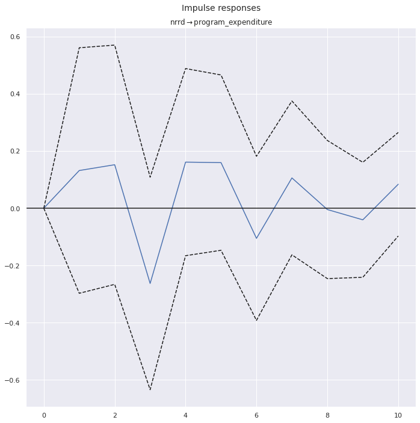
results_err.irf().plot(impulse='nrri', response='program_expenditure');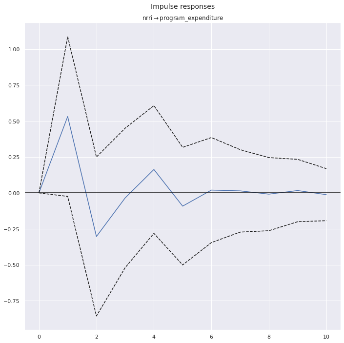
results_err.irf().plot(impulse='nrrd', response='program_expenditure');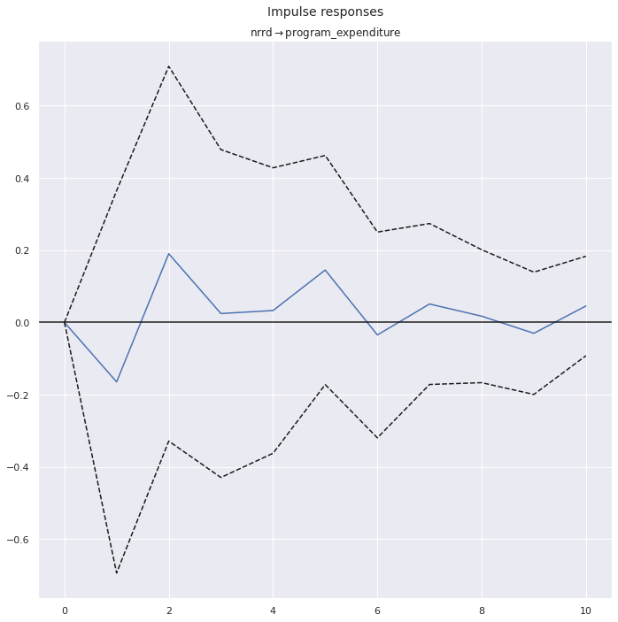
These are harder to eyeball because I’m showing the individual responses and the paper is showing the cumulative ones. But again, if I think about what adding up the points in my charts would look like, they end up closer to the data set with the error.
Conclusion
The initial goal of this exercise was to practice my python and econometrics. I’ve certainly done that over the course of working on it, but as a bonus I’ve also demonstrated how sensitive results can be to even a single data point (at least when you have relatively few samples.
Appendix: Raw tables
For the purposes of validation, here are the full tables I used to produce both the summary statistics above, as well as all statistical models and tests below
mdfl| program_expenditure | debt_service | corporate_income_tax | personal_income_tax | other_revenue | natural_resource_revenue | deficit | heritage_dummy | ur_lag | er_lag | cad_usd_lag | |
|---|---|---|---|---|---|---|---|---|---|---|---|
| budget_dt | |||||||||||
| 1964-01-01 | NaN | NaN | NaN | NaN | NaN | NaN | NaN | NaN | NaN | NaN | NaN |
| 1965-01-01 | 2327.844291 | 11.272854 | 174.729232 | 231.093501 | 1442.925275 | 1397.833860 | -907.464724 | 0.0 | 2.500000 | 37.935748 | NaN |
| 1966-01-01 | 2891.984579 | 10.750872 | 145.136773 | 301.024417 | 1542.750138 | 1290.104645 | -376.280521 | 0.0 | 2.500000 | 37.935748 | NaN |
| 1967-01-01 | 4436.875339 | 10.199713 | 203.994268 | 407.988537 | 2351.033944 | 1116.868620 | 367.189683 | 0.0 | 2.500000 | 37.935748 | NaN |
| 1968-01-01 | 4368.535726 | 19.160244 | 239.503055 | 469.425988 | 2639.323668 | 1360.377353 | -320.934094 | 0.0 | 2.700000 | 38.322148 | NaN |
| 1969-01-01 | 4396.849967 | 17.909776 | 286.556413 | 599.977490 | 2444.684401 | 1141.748209 | -58.206771 | 0.0 | 3.300000 | 39.041995 | NaN |
| 1970-01-01 | 4745.762712 | 38.135593 | 245.762712 | 771.186441 | 2737.288136 | 978.813559 | 50.847458 | 0.0 | 3.400000 | 39.833226 | NaN |
| 1971-01-01 | 4993.823780 | 67.916003 | 271.664014 | 767.051333 | 2848.477084 | 1090.651114 | 83.896240 | 0.0 | 5.200000 | 39.686520 | NaN |
| 1972-01-01 | 4988.477844 | 85.114978 | 362.663820 | 858.551083 | 2768.087112 | 1224.915554 | -140.624746 | 0.0 | 5.700000 | 38.456938 | 1.009883 |
| 1973-01-01 | 5004.356719 | 81.151731 | 382.089398 | 977.202089 | 2387.213408 | 2160.664826 | -821.661272 | 0.0 | 5.700000 | 39.470588 | 0.990792 |
| 1974-01-01 | 6124.378806 | 92.793618 | 829.155879 | 1038.689856 | 2352.767225 | 4549.880638 | -2553.321174 | 0.0 | 5.300000 | 40.843443 | 1.000233 |
| 1975-01-01 | 7071.218716 | 84.149869 | 686.347373 | 925.648564 | 2721.722340 | 4417.868145 | -1596.217836 | 0.0 | 3.500000 | 42.840909 | 0.978133 |
| 1976-01-01 | 6845.363213 | 59.113672 | 326.307469 | 1038.036080 | 2830.362613 | -125.320985 | 2835.091707 | 1.0 | 4.200000 | 43.439912 | 1.017267 |
| 1977-01-01 | 7061.151803 | 46.247496 | 554.969954 | 1206.639219 | 2720.193639 | 4513.335196 | -1887.738708 | 1.0 | 3.891667 | 64.800000 | 0.986075 |
| 1978-01-01 | 6825.084687 | 48.260049 | 545.709790 | 1225.062794 | 2643.165786 | 4701.642511 | -2242.236144 | 1.0 | 4.475000 | 64.633333 | 1.063525 |
| 1979-01-01 | 9302.990086 | 32.774318 | 342.491620 | 1265.088664 | 2525.261181 | 5181.619632 | 21.303307 | 1.0 | 4.750000 | 65.341667 | 1.140767 |
| 1980-01-01 | 9937.742745 | 31.376340 | 620.395823 | 1337.773062 | 2676.972321 | 4797.727697 | 536.250183 | 1.0 | 3.966667 | 67.125000 | 1.171558 |
| 1981-01-01 | 10441.551444 | 109.885646 | 701.577586 | 1597.568239 | 5094.588359 | 4001.769572 | -844.066666 | 1.0 | 3.866667 | 68.050000 | 1.169408 |
| 1982-01-01 | 12281.969722 | 57.716023 | 639.073783 | 1731.480694 | 4808.269418 | 2887.899921 | 2272.961929 | 1.0 | 3.883333 | 69.500000 | 1.198892 |
| 1983-01-01 | 11489.190564 | 168.596206 | 771.007210 | 1488.773513 | 4813.372379 | 4001.941517 | 582.692150 | 1.0 | 7.750000 | 66.275000 | 1.233858 |
| 1984-01-01 | 11320.287262 | 218.545766 | 793.666203 | 1396.584127 | 5529.782999 | 4306.693537 | -487.893837 | 1.0 | 11.008333 | 63.816667 | 1.232583 |
| 1985-01-01 | 12869.198063 | 168.831114 | 723.561918 | 1410.945740 | 5622.447161 | 3939.701880 | 1341.372479 | 1.0 | 11.408333 | 63.933333 | 1.295150 |
| 1986-01-01 | 11863.166376 | 263.862833 | 351.817111 | 1570.739021 | 4940.542816 | 1488.115306 | 3775.814955 | 1.0 | 9.775000 | 65.491667 | 1.365900 |
| 1987-01-01 | 10791.884860 | 486.136253 | 505.683690 | 1900.350807 | 5480.081397 | 2231.807343 | 1160.097876 | 0.0 | 10.008333 | 65.350000 | 1.389767 |
| 1988-01-01 | 10774.989850 | 655.047057 | 572.857965 | 1675.835569 | 5818.165763 | 1713.642551 | 1649.535059 | 0.0 | 9.525000 | 65.450000 | 1.326175 |
| 1989-01-01 | 10745.455671 | 865.692419 | 543.484030 | 1968.964999 | 5716.675586 | 1739.148895 | 1642.874581 | 0.0 | 7.983333 | 66.925000 | 1.230942 |
| 1990-01-01 | 10614.752643 | 923.523101 | 578.462597 | 2014.173627 | 5689.536231 | 1936.372929 | 1319.730359 | 0.0 | 7.158333 | 67.516667 | 1.184108 |
| 1991-01-01 | 10060.915107 | 878.291420 | 488.608088 | 2043.330951 | 5298.490171 | 1351.526066 | 1757.251250 | 0.0 | 6.916667 | 67.500000 | 1.167017 |
| 1992-01-01 | 10490.255898 | 920.232018 | 413.099221 | 1811.929709 | 5614.128666 | 1415.691681 | 2155.638638 | 0.0 | 8.250000 | 66.591667 | 1.145975 |
| 1993-01-01 | 9567.673764 | 1046.414892 | 540.289188 | 1820.154561 | 5604.076850 | 1782.195133 | 867.372924 | 0.0 | 9.458333 | 65.383333 | 1.208808 |
| 1994-01-01 | 8304.447335 | 1075.635389 | 661.029079 | 1886.982358 | 5328.892392 | 2081.040289 | -577.861395 | 0.0 | 9.583333 | 64.875000 | 1.290167 |
| 1995-01-01 | 7542.256294 | 1000.994980 | 792.231321 | 1889.578759 | 4888.995090 | 1657.024370 | -684.578266 | 0.0 | 8.783333 | 65.725000 | 1.365892 |
| 1996-01-01 | 7286.510699 | 838.743299 | 807.190029 | 1976.382124 | 4455.321793 | 2314.288966 | -1427.928914 | 0.0 | 7.841667 | 66.650000 | 1.372650 |
| 1997-01-01 | 7598.400009 | 729.331650 | 1020.071271 | 2138.894710 | 4551.426710 | 2084.277589 | -1466.938621 | 0.0 | 6.883333 | 67.316667 | 1.363700 |
| 1998-01-01 | 7647.600932 | 735.120709 | 884.383797 | 2452.712386 | 4366.478407 | 1262.339259 | -583.192208 | 0.0 | 5.875000 | 67.925000 | 1.384867 |
| 1999-01-01 | 8342.393922 | 487.608742 | 640.113987 | 2601.260027 | 4640.443868 | 2371.737084 | -1423.552301 | 0.0 | 5.583333 | 68.566667 | 1.483633 |
| 2000-01-01 | 8710.352822 | 474.863472 | 980.253881 | 1910.598641 | 4348.877202 | 5129.494603 | -3184.008033 | 0.0 | 5.666667 | 68.500000 | 1.485825 |
| 2001-01-01 | 9338.287124 | 360.113309 | 1037.070500 | 1946.193764 | 4320.894451 | 2897.190669 | -502.948950 | 0.0 | 4.966667 | 68.675000 | 1.485517 |
| 2002-01-01 | 8826.496403 | 209.515399 | 888.679810 | 2127.725707 | 3820.134757 | 3138.329395 | -938.857868 | 0.0 | 4.725000 | 68.975000 | 1.549017 |
| 2003-01-01 | 8889.845744 | 112.157737 | 701.917057 | 1909.164731 | 4925.835384 | 3176.836868 | -1711.750559 | 0.0 | 5.341667 | 68.975000 | 1.570592 |
| 2004-01-01 | 9563.476337 | 121.092191 | 947.887219 | 1864.098004 | 5040.562703 | 3907.027522 | -2075.006920 | 0.0 | 5.116667 | 69.741667 | 1.401167 |
| 2005-01-01 | 10252.960247 | 95.080363 | 1118.344428 | 1793.108293 | 5214.467798 | 4829.545684 | -2607.425593 | 1.0 | 4.591667 | 70.125000 | 1.301575 |
| 2006-01-01 | 10491.526962 | 77.006633 | 1291.562414 | 2729.974686 | 5203.857546 | 3943.455955 | -2600.317006 | 1.0 | 3.941667 | 69.850000 | 1.211483 |
| 2007-01-01 | 11093.119793 | 71.131049 | 1560.562037 | 2749.181812 | 4712.930591 | 3359.113940 | -1217.537538 | 1.0 | 3.458333 | 70.791667 | 1.134375 |
| 2008-01-01 | 11481.223206 | 65.508008 | 1339.134853 | 2742.517945 | 3444.209491 | 3752.538047 | 268.330878 | 0.0 | 3.566667 | 71.383333 | 1.074183 |
| 2009-01-01 | 11192.177199 | 111.838586 | 1464.684956 | 2426.866512 | 5009.321141 | 2085.188848 | 317.954328 | 0.0 | 3.691667 | 71.800000 | 1.066767 |
| 2010-01-01 | 11408.370379 | 141.808459 | 1001.672465 | 2292.670240 | 4699.207866 | 2532.122236 | 1024.506031 | 0.0 | 6.575000 | 69.416667 | 1.141442 |
| 2011-01-01 | 11288.615235 | 144.188676 | 1062.777455 | 2474.323912 | 4526.773140 | 3362.283433 | 6.645971 | 0.0 | 6.516667 | 68.133333 | 1.030125 |
| 2012-01-01 | 11491.360391 | 143.201492 | 1330.207614 | 2690.901483 | 4642.860889 | 2175.711738 | 794.880159 | 0.0 | 5.433333 | 69.508333 | 0.989025 |
| 2013-01-01 | 11803.343431 | 158.459375 | 1473.940765 | 2829.977012 | 5288.245930 | 2572.413384 | -202.774285 | 0.0 | 4.700000 | 69.958333 | 0.999408 |
| 2014-01-01 | 11006.721496 | 182.199224 | 1479.028999 | 2817.708454 | 4975.008515 | 2283.359468 | -366.184716 | 0.0 | 4.658333 | 69.591667 | 1.029992 |
| 2015-01-01 | 10664.784806 | 176.142114 | 1040.727000 | 2817.529567 | 4492.864354 | 691.915996 | 1797.890004 | 0.0 | 4.775000 | 69.058333 | 1.104683 |
| 2016-01-01 | 11322.810385 | 230.029051 | 913.571647 | 2608.854241 | 4407.637789 | 750.684901 | 2872.090858 | 0.0 | 6.091667 | 68.408333 | 1.278808 |
| 2017-01-01 | 11433.853017 | 319.856119 | 813.921696 | 2543.505301 | 5094.564399 | 1175.559759 | 2126.157981 | 0.0 | 8.133333 | 66.250000 | 1.325583 |
| 2018-01-01 | NaN | NaN | NaN | NaN | NaN | NaN | NaN | NaN | 7.883333 | 66.316667 | 1.297858 |
model_df_first_diff(mdfl)| natural_resource_revenue | nrri | nrrd | corporate_income_tax | personal_income_tax | other_revenue | debt_service | program_expenditure | deficit | ur_lag | er_lag | cad_usd_lag | heritage_dummy | constant | |
|---|---|---|---|---|---|---|---|---|---|---|---|---|---|---|
| budget_dt | ||||||||||||||
| 1970-01-01 | -162.934650 | 0.000000 | -162.934650 | -40.793701 | 171.208950 | 292.603734 | 20.225817 | 348.912745 | 109.054229 | 0.100000 | 0.791232 | NaN | 0.0 | 1 |
| 1971-01-01 | 111.837554 | 111.837554 | 0.000000 | 25.901302 | -4.135108 | 111.188949 | 29.780410 | 248.061068 | 33.048782 | 1.800000 | -0.146706 | NaN | 0.0 | 1 |
| 1972-01-01 | 134.264440 | 134.264440 | 0.000000 | 90.999806 | 91.499750 | -80.389972 | 17.198975 | -5.345936 | -224.520986 | 0.500000 | -1.229583 | NaN | 0.0 | 1 |
| 1973-01-01 | 935.749273 | 935.749273 | 0.000000 | 19.425579 | 118.651006 | -380.873704 | -3.963247 | 15.878875 | -681.036526 | 0.000000 | 1.013650 | -0.019092 | 0.0 | 1 |
| 1974-01-01 | 2389.215812 | 2389.215812 | 0.000000 | 447.066481 | 61.487767 | -34.446183 | 11.641888 | 1120.022088 | -1731.659902 | -0.400000 | 1.372855 | 0.009442 | 0.0 | 1 |
| 1975-01-01 | -132.012493 | 0.000000 | -132.012493 | -142.808507 | -113.041292 | 368.955115 | -8.643749 | 946.839909 | 957.103338 | -1.800000 | 1.997466 | -0.022100 | 0.0 | 1 |
| 1976-01-01 | -4543.189130 | 0.000000 | -4543.189130 | -360.039903 | 112.387516 | 108.640274 | -25.036197 | -225.855503 | 4431.309543 | 0.700000 | 0.599003 | 0.039133 | 1.0 | 1 |
| 1977-01-01 | 4638.656180 | 4638.656180 | 0.000000 | 228.662485 | 168.603139 | -110.168974 | -12.866176 | 215.788591 | -4722.830415 | -0.308333 | 21.360088 | -0.031192 | 1.0 | 1 |
| 1978-01-01 | 188.307315 | 188.307315 | 0.000000 | -9.260164 | 18.423575 | -77.027853 | 2.012553 | -236.067116 | -354.497436 | 0.583333 | -0.166667 | 0.077450 | 1.0 | 1 |
| 1979-01-01 | 479.977121 | 479.977121 | 0.000000 | -203.218170 | 40.025870 | -117.904605 | -15.485732 | 2477.905398 | 2263.539451 | 0.275000 | 0.708333 | 0.077242 | 1.0 | 1 |
| 1980-01-01 | -383.891935 | 0.000000 | -383.891935 | 277.904203 | 72.684398 | 151.711140 | -1.397977 | 634.752660 | 514.946876 | -0.783333 | 1.783333 | 0.030792 | 1.0 | 1 |
| 1981-01-01 | -795.958126 | 0.000000 | -795.958126 | 81.181763 | 259.795177 | 2417.616038 | 78.509306 | 503.808699 | -1380.316848 | -0.100000 | 0.925000 | -0.002150 | 1.0 | 1 |
| 1982-01-01 | -1113.869651 | 0.000000 | -1113.869651 | -62.503803 | 133.912455 | -286.318941 | -52.169623 | 1840.418278 | 3117.028595 | 0.016667 | 1.450000 | 0.029483 | 1.0 | 1 |
| 1983-01-01 | 1114.041596 | 1114.041596 | 0.000000 | 131.933427 | -242.707181 | 5.102961 | 110.880183 | -792.779158 | -1690.269779 | 3.866667 | -3.225000 | 0.034967 | 1.0 | 1 |
| 1984-01-01 | 304.752020 | 304.752020 | 0.000000 | 22.658992 | -92.189386 | 716.410620 | 49.949560 | -168.903301 | -1070.585987 | 3.258333 | -2.458333 | -0.001275 | 1.0 | 1 |
| 1985-01-01 | -366.991657 | 0.000000 | -366.991657 | -70.104285 | 14.361613 | 92.664162 | -49.714652 | 1548.910801 | 1829.266316 | 0.400000 | 0.116667 | 0.062567 | 1.0 | 1 |
| 1986-01-01 | -2451.586574 | 0.000000 | -2451.586574 | -371.744807 | 159.793281 | -681.904345 | 95.031719 | -1006.031688 | 2434.442476 | -1.633333 | 1.558333 | 0.070750 | 1.0 | 1 |
| 1987-01-01 | 743.692037 | 743.692037 | 0.000000 | 153.866579 | 329.611786 | 539.538581 | 222.273420 | -1071.281516 | -2615.717079 | 0.233333 | -0.141667 | 0.023867 | 0.0 | 1 |
| 1988-01-01 | -518.164793 | 0.000000 | -518.164793 | 67.174276 | -224.515238 | 338.084366 | 168.910804 | -16.895010 | 489.437183 | -0.483333 | 0.100000 | -0.063592 | 0.0 | 1 |
| 1989-01-01 | 25.506344 | 25.506344 | 0.000000 | -29.373936 | 293.129430 | -101.490177 | 210.645362 | -29.534180 | -6.660479 | -1.541667 | 1.475000 | -0.095233 | 0.0 | 1 |
| 1990-01-01 | 197.224034 | 197.224034 | 0.000000 | 34.978568 | 45.208628 | -27.139354 | 57.830682 | -130.703028 | -323.144222 | -0.825000 | 0.591667 | -0.046833 | 0.0 | 1 |
| 1991-01-01 | -584.846863 | 0.000000 | -584.846863 | -89.854509 | 29.157325 | -391.046061 | -45.231681 | -553.837536 | 437.520891 | -0.241667 | -0.016667 | -0.017092 | 0.0 | 1 |
| 1992-01-01 | 64.165615 | 64.165615 | 0.000000 | -75.508867 | -231.401242 | 315.638496 | 41.940598 | 429.340791 | 398.387388 | 1.333333 | -0.908333 | -0.021042 | 0.0 | 1 |
| 1993-01-01 | 366.503452 | 366.503452 | 0.000000 | 127.189967 | 8.224851 | -10.051816 | 126.182874 | -922.582134 | -1288.265714 | 1.208333 | -1.208333 | 0.062833 | 0.0 | 1 |
| 1994-01-01 | 298.845156 | 298.845156 | 0.000000 | 120.739891 | 66.827798 | -275.184458 | 29.220498 | -1263.226429 | -1445.234319 | 0.125000 | -0.508333 | 0.081358 | 0.0 | 1 |
| 1995-01-01 | -424.015919 | 0.000000 | -424.015919 | 131.202242 | 2.596401 | -439.897302 | -74.640409 | -762.191041 | -106.716872 | -0.800000 | 0.850000 | 0.075725 | 0.0 | 1 |
| 1996-01-01 | 657.264596 | 657.264596 | 0.000000 | 14.958707 | 86.803365 | -433.673297 | -162.251681 | -255.745595 | -743.350647 | -0.941667 | 0.925000 | 0.006758 | 0.0 | 1 |
| 1997-01-01 | -230.011377 | 0.000000 | -230.011377 | 212.881242 | 162.512585 | 96.104917 | -109.411649 | 311.889310 | -39.009707 | -0.958333 | 0.666667 | -0.008950 | 0.0 | 1 |
| 1998-01-01 | -821.938330 | 0.000000 | -821.938330 | -135.687474 | 313.817676 | -184.948302 | 5.789059 | 49.200923 | 883.746412 | -1.008333 | 0.608333 | 0.021167 | 0.0 | 1 |
| 1999-01-01 | 1109.397825 | 1109.397825 | 0.000000 | -244.269810 | 148.547641 | 273.965461 | -247.511966 | 694.792990 | -840.360093 | -0.291667 | 0.641667 | 0.098767 | 0.0 | 1 |
| 2000-01-01 | 2757.757519 | 2757.757519 | 0.000000 | 340.139894 | -690.661386 | -291.566666 | -12.745271 | 367.958900 | -1760.455732 | 0.083333 | -0.066667 | 0.002192 | 0.0 | 1 |
| 2001-01-01 | -2232.303933 | 0.000000 | -2232.303933 | 56.816619 | 35.595123 | -27.982751 | -114.750162 | 627.934302 | 2681.059082 | -0.700000 | 0.175000 | -0.000308 | 0.0 | 1 |
| 2002-01-01 | 241.138725 | 241.138725 | 0.000000 | -148.390689 | 181.531943 | -500.759694 | -150.597911 | -511.790721 | -435.908918 | -0.241667 | 0.300000 | 0.063500 | 0.0 | 1 |
| 2003-01-01 | 38.507474 | 38.507474 | 0.000000 | -186.762753 | -218.560977 | 1105.700627 | -97.357661 | 63.349341 | -772.892691 | 0.616667 | 0.000000 | 0.021575 | 0.0 | 1 |
| 2004-01-01 | 730.190654 | 730.190654 | 0.000000 | 245.970162 | -45.066727 | 114.727320 | 8.934454 | 673.630593 | -363.256361 | -0.225000 | 0.766667 | -0.169425 | 0.0 | 1 |
| 2005-01-01 | 922.518162 | 922.518162 | 0.000000 | 170.457209 | -70.989711 | 173.905095 | -26.011829 | 689.483910 | -532.418673 | -0.525000 | 0.383333 | -0.099592 | 1.0 | 1 |
| 2006-01-01 | -886.089729 | 0.000000 | -886.089729 | 173.217986 | 936.866393 | -10.610252 | -18.073730 | 238.566715 | 7.108587 | -0.650000 | -0.275000 | -0.090092 | 1.0 | 1 |
| 2007-01-01 | -584.342016 | 0.000000 | -584.342016 | 268.999623 | 19.207126 | -490.926955 | -5.875584 | 601.592831 | 1382.779468 | -0.483333 | 0.941667 | -0.077108 | 1.0 | 1 |
| 2008-01-01 | 393.424107 | 393.424107 | 0.000000 | -221.427184 | -6.663868 | -1268.721100 | -5.623041 | 388.103413 | 1485.868417 | 0.108333 | 0.591667 | -0.060192 | 0.0 | 1 |
| 2009-01-01 | -1667.349199 | 0.000000 | -1667.349199 | 125.550103 | -315.651432 | 1565.111650 | 46.330578 | -289.046007 | 49.623450 | 0.125000 | 0.416667 | -0.007417 | 0.0 | 1 |
| 2010-01-01 | 446.933388 | 446.933388 | 0.000000 | -463.012491 | -134.196272 | -310.113274 | 29.969873 | 216.193180 | 706.551703 | 2.883333 | -2.383333 | 0.074675 | 0.0 | 1 |
| 2011-01-01 | 830.161197 | 830.161197 | 0.000000 | 61.104990 | 181.653671 | -172.434726 | 2.380217 | -119.755144 | -1017.860060 | -0.058333 | -1.283333 | -0.111317 | 0.0 | 1 |
| 2012-01-01 | -1186.571695 | 0.000000 | -1186.571695 | 267.430159 | 216.577571 | 116.087749 | -0.987183 | 202.745156 | 788.234188 | -1.083333 | 1.375000 | -0.041100 | 0.0 | 1 |
| 2013-01-01 | 396.701645 | 396.701645 | 0.000000 | 143.733151 | 139.075529 | 645.385041 | 15.257883 | 311.983040 | -997.654445 | -0.733333 | 0.450000 | 0.010383 | 0.0 | 1 |
| 2014-01-01 | -289.053915 | 0.000000 | -289.053915 | 5.088233 | -12.268558 | -313.237415 | 23.739849 | -796.621934 | -163.410431 | -0.041667 | -0.366667 | 0.030583 | 0.0 | 1 |
| 2015-01-01 | -1591.443473 | 0.000000 | -1591.443473 | -438.301999 | -0.178887 | -482.144162 | -6.057110 | -341.936691 | 2164.074720 | 0.116667 | -0.533333 | 0.074692 | 0.0 | 1 |
| 2016-01-01 | 58.768905 | 58.768905 | 0.000000 | -127.155353 | -208.675326 | -85.226565 | 53.886937 | 658.025579 | 1074.200854 | 1.316667 | -0.650000 | 0.174125 | 0.0 | 1 |
mdfl_err| program_expenditure | debt_service | corporate_income_tax | personal_income_tax | other_revenue | natural_resource_revenue | deficit | heritage_dummy | ur_lag | er_lag | cad_usd_lag | |
|---|---|---|---|---|---|---|---|---|---|---|---|
| budget_dt | |||||||||||
| 1964-01-01 | NaN | NaN | NaN | NaN | NaN | NaN | NaN | NaN | NaN | NaN | NaN |
| 1965-01-01 | 2327.844291 | 11.272854 | 174.729232 | 231.093501 | 1442.925275 | 1397.833860 | -907.464724 | 0.0 | 2.500000 | 37.935748 | NaN |
| 1966-01-01 | 2891.984579 | 10.750872 | 145.136773 | 301.024417 | 1542.750138 | 1290.104645 | -376.280521 | 0.0 | 2.500000 | 37.935748 | NaN |
| 1967-01-01 | 4436.875339 | 10.199713 | 203.994268 | 407.988537 | 2351.033944 | 1116.868620 | 367.189683 | 0.0 | 2.500000 | 37.935748 | NaN |
| 1968-01-01 | 4368.535726 | 19.160244 | 239.503055 | 469.425988 | 2639.323668 | 1360.377353 | -320.934094 | 0.0 | 2.700000 | 38.322148 | NaN |
| 1969-01-01 | 4396.849967 | 17.909776 | 286.556413 | 599.977490 | 2444.684401 | 1141.748209 | -58.206771 | 0.0 | 3.300000 | 39.041995 | NaN |
| 1970-01-01 | 4745.762712 | 38.135593 | 245.762712 | 771.186441 | 2737.288136 | 978.813559 | 50.847458 | 0.0 | 3.400000 | 39.833226 | NaN |
| 1971-01-01 | 4993.823780 | 67.916003 | 271.664014 | 767.051333 | 2848.477084 | 1090.651114 | 83.896240 | 0.0 | 5.200000 | 39.686520 | NaN |
| 1972-01-01 | 4988.477844 | 85.114978 | 362.663820 | 858.551083 | 2768.087112 | 1224.915554 | -140.624746 | 0.0 | 5.700000 | 38.456938 | 1.009883 |
| 1973-01-01 | 5004.356719 | 81.151731 | 382.089398 | 977.202089 | 2387.213408 | 2160.664826 | -821.661272 | 0.0 | 5.700000 | 39.470588 | 0.990792 |
| 1974-01-01 | 6124.378806 | 92.793618 | 829.155879 | 1038.689856 | 2352.767225 | 4549.880638 | -2553.321174 | 0.0 | 5.300000 | 40.843443 | 1.000233 |
| 1975-01-01 | 7071.218716 | 84.149869 | 686.347373 | 925.648564 | 2721.722340 | 4417.868145 | -1596.217836 | 0.0 | 3.500000 | 42.840909 | 0.978133 |
| 1976-01-01 | 6845.363213 | 59.113672 | 326.307469 | 1038.036080 | 2830.362613 | 4887.518397 | -2177.747675 | 1.0 | 4.200000 | 43.439912 | 1.017267 |
| 1977-01-01 | 7061.151803 | 46.247496 | 554.969954 | 1206.639219 | 2720.193639 | 4513.335196 | -1887.738708 | 1.0 | 3.891667 | 64.800000 | 0.986075 |
| 1978-01-01 | 6825.084687 | 48.260049 | 545.709790 | 1225.062794 | 2643.165786 | 4701.642511 | -2242.236144 | 1.0 | 4.475000 | 64.633333 | 1.063525 |
| 1979-01-01 | 9302.990086 | 32.774318 | 342.491620 | 1265.088664 | 2525.261181 | 5181.619632 | 21.303307 | 1.0 | 4.750000 | 65.341667 | 1.140767 |
| 1980-01-01 | 9937.742745 | 31.376340 | 620.395823 | 1337.773062 | 2676.972321 | 4797.727697 | 536.250183 | 1.0 | 3.966667 | 67.125000 | 1.171558 |
| 1981-01-01 | 10441.551444 | 109.885646 | 701.577586 | 1597.568239 | 5094.588359 | 4001.769572 | -844.066666 | 1.0 | 3.866667 | 68.050000 | 1.169408 |
| 1982-01-01 | 12281.969722 | 57.716023 | 639.073783 | 1731.480694 | 4808.269418 | 2887.899921 | 2272.961929 | 1.0 | 3.883333 | 69.500000 | 1.198892 |
| 1983-01-01 | 11489.190564 | 168.596206 | 771.007210 | 1488.773513 | 4813.372379 | 4001.941517 | 582.692150 | 1.0 | 7.750000 | 66.275000 | 1.233858 |
| 1984-01-01 | 11320.287262 | 218.545766 | 793.666203 | 1396.584127 | 5529.782999 | 4306.693537 | -487.893837 | 1.0 | 11.008333 | 63.816667 | 1.232583 |
| 1985-01-01 | 12869.198063 | 168.831114 | 723.561918 | 1410.945740 | 5622.447161 | 3939.701880 | 1341.372479 | 1.0 | 11.408333 | 63.933333 | 1.295150 |
| 1986-01-01 | 11863.166376 | 263.862833 | 351.817111 | 1570.739021 | 4940.542816 | 1488.115306 | 3775.814955 | 1.0 | 9.775000 | 65.491667 | 1.365900 |
| 1987-01-01 | 10791.884860 | 486.136253 | 505.683690 | 1900.350807 | 5480.081397 | 2231.807343 | 1160.097876 | 0.0 | 10.008333 | 65.350000 | 1.389767 |
| 1988-01-01 | 10774.989850 | 655.047057 | 572.857965 | 1675.835569 | 5818.165763 | 1713.642551 | 1649.535059 | 0.0 | 9.525000 | 65.450000 | 1.326175 |
| 1989-01-01 | 10745.455671 | 865.692419 | 543.484030 | 1968.964999 | 5716.675586 | 1739.148895 | 1642.874581 | 0.0 | 7.983333 | 66.925000 | 1.230942 |
| 1990-01-01 | 10614.752643 | 923.523101 | 578.462597 | 2014.173627 | 5689.536231 | 1936.372929 | 1319.730359 | 0.0 | 7.158333 | 67.516667 | 1.184108 |
| 1991-01-01 | 10060.915107 | 878.291420 | 488.608088 | 2043.330951 | 5298.490171 | 1351.526066 | 1757.251250 | 0.0 | 6.916667 | 67.500000 | 1.167017 |
| 1992-01-01 | 10490.255898 | 920.232018 | 413.099221 | 1811.929709 | 5614.128666 | 1415.691681 | 2155.638638 | 0.0 | 8.250000 | 66.591667 | 1.145975 |
| 1993-01-01 | 9567.673764 | 1046.414892 | 540.289188 | 1820.154561 | 5604.076850 | 1782.195133 | 867.372924 | 0.0 | 9.458333 | 65.383333 | 1.208808 |
| 1994-01-01 | 8304.447335 | 1075.635389 | 661.029079 | 1886.982358 | 5328.892392 | 2081.040289 | -577.861395 | 0.0 | 9.583333 | 64.875000 | 1.290167 |
| 1995-01-01 | 7542.256294 | 1000.994980 | 792.231321 | 1889.578759 | 4888.995090 | 1657.024370 | -684.578266 | 0.0 | 8.783333 | 65.725000 | 1.365892 |
| 1996-01-01 | 7286.510699 | 838.743299 | 807.190029 | 1976.382124 | 4455.321793 | 2314.288966 | -1427.928914 | 0.0 | 7.841667 | 66.650000 | 1.372650 |
| 1997-01-01 | 7598.400009 | 729.331650 | 1020.071271 | 2138.894710 | 4551.426710 | 2084.277589 | -1466.938621 | 0.0 | 6.883333 | 67.316667 | 1.363700 |
| 1998-01-01 | 7647.600932 | 735.120709 | 884.383797 | 2452.712386 | 4366.478407 | 1262.339259 | -583.192208 | 0.0 | 5.875000 | 67.925000 | 1.384867 |
| 1999-01-01 | 8342.393922 | 487.608742 | 640.113987 | 2601.260027 | 4640.443868 | 2371.737084 | -1423.552301 | 0.0 | 5.583333 | 68.566667 | 1.483633 |
| 2000-01-01 | 8710.352822 | 474.863472 | 980.253881 | 1910.598641 | 4348.877202 | 5129.494603 | -3184.008033 | 0.0 | 5.666667 | 68.500000 | 1.485825 |
| 2001-01-01 | 9338.287124 | 360.113309 | 1037.070500 | 1946.193764 | 4320.894451 | 2897.190669 | -502.948950 | 0.0 | 4.966667 | 68.675000 | 1.485517 |
| 2002-01-01 | 8826.496403 | 209.515399 | 888.679810 | 2127.725707 | 3820.134757 | 3138.329395 | -938.857868 | 0.0 | 4.725000 | 68.975000 | 1.549017 |
| 2003-01-01 | 8889.845744 | 112.157737 | 701.917057 | 1909.164731 | 4925.835384 | 3176.836868 | -1711.750559 | 0.0 | 5.341667 | 68.975000 | 1.570592 |
| 2004-01-01 | 9563.476337 | 121.092191 | 947.887219 | 1864.098004 | 5040.562703 | 3907.027522 | -2075.006920 | 0.0 | 5.116667 | 69.741667 | 1.401167 |
| 2005-01-01 | 10252.960247 | 95.080363 | 1118.344428 | 1793.108293 | 5214.467798 | 4829.545684 | -2607.425593 | 1.0 | 4.591667 | 70.125000 | 1.301575 |
| 2006-01-01 | 10491.526962 | 77.006633 | 1291.562414 | 2729.974686 | 5203.857546 | 3943.455955 | -2600.317006 | 1.0 | 3.941667 | 69.850000 | 1.211483 |
| 2007-01-01 | 11093.119793 | 71.131049 | 1560.562037 | 2749.181812 | 4712.930591 | 3359.113940 | -1217.537538 | 1.0 | 3.458333 | 70.791667 | 1.134375 |
| 2008-01-01 | 11481.223206 | 65.508008 | 1339.134853 | 2742.517945 | 3444.209491 | 3752.538047 | 268.330878 | 0.0 | 3.566667 | 71.383333 | 1.074183 |
| 2009-01-01 | 11192.177199 | 111.838586 | 1464.684956 | 2426.866512 | 5009.321141 | 2085.188848 | 317.954328 | 0.0 | 3.691667 | 71.800000 | 1.066767 |
| 2010-01-01 | 11408.370379 | 141.808459 | 1001.672465 | 2292.670240 | 4699.207866 | 2532.122236 | 1024.506031 | 0.0 | 6.575000 | 69.416667 | 1.141442 |
| 2011-01-01 | 11288.615235 | 144.188676 | 1062.777455 | 2474.323912 | 4526.773140 | 3362.283433 | 6.645971 | 0.0 | 6.516667 | 68.133333 | 1.030125 |
| 2012-01-01 | 11491.360391 | 143.201492 | 1330.207614 | 2690.901483 | 4642.860889 | 2175.711738 | 794.880159 | 0.0 | 5.433333 | 69.508333 | 0.989025 |
| 2013-01-01 | 11803.343431 | 158.459375 | 1473.940765 | 2829.977012 | 5288.245930 | 2572.413384 | -202.774285 | 0.0 | 4.700000 | 69.958333 | 0.999408 |
| 2014-01-01 | 11006.721496 | 182.199224 | 1479.028999 | 2817.708454 | 4975.008515 | 2283.359468 | -366.184716 | 0.0 | 4.658333 | 69.591667 | 1.029992 |
| 2015-01-01 | 10664.784806 | 176.142114 | 1040.727000 | 2817.529567 | 4492.864354 | 691.915996 | 1797.890004 | 0.0 | 4.775000 | 69.058333 | 1.104683 |
| 2016-01-01 | 11322.810385 | 230.029051 | 913.571647 | 2608.854241 | 4407.637789 | 750.684901 | 2872.090858 | 0.0 | 6.091667 | 68.408333 | 1.278808 |
| 2017-01-01 | 11433.853017 | 319.856119 | 813.921696 | 2543.505301 | 5094.564399 | 1175.559759 | 2126.157981 | 0.0 | 8.133333 | 66.250000 | 1.325583 |
| 2018-01-01 | NaN | NaN | NaN | NaN | NaN | NaN | NaN | NaN | 7.883333 | 66.316667 | 1.297858 |
model_df_first_diff(mdfl_err)| natural_resource_revenue | nrri | nrrd | corporate_income_tax | personal_income_tax | other_revenue | debt_service | program_expenditure | deficit | ur_lag | er_lag | cad_usd_lag | heritage_dummy | constant | |
|---|---|---|---|---|---|---|---|---|---|---|---|---|---|---|
| budget_dt | ||||||||||||||
| 1970-01-01 | -162.934650 | 0.000000 | -162.934650 | -40.793701 | 171.208950 | 292.603734 | 20.225817 | 348.912745 | 109.054229 | 0.100000 | 0.791232 | NaN | 0.0 | 1 |
| 1971-01-01 | 111.837554 | 111.837554 | 0.000000 | 25.901302 | -4.135108 | 111.188949 | 29.780410 | 248.061068 | 33.048782 | 1.800000 | -0.146706 | NaN | 0.0 | 1 |
| 1972-01-01 | 134.264440 | 134.264440 | 0.000000 | 90.999806 | 91.499750 | -80.389972 | 17.198975 | -5.345936 | -224.520986 | 0.500000 | -1.229583 | NaN | 0.0 | 1 |
| 1973-01-01 | 935.749273 | 935.749273 | 0.000000 | 19.425579 | 118.651006 | -380.873704 | -3.963247 | 15.878875 | -681.036526 | 0.000000 | 1.013650 | -0.019092 | 0.0 | 1 |
| 1974-01-01 | 2389.215812 | 2389.215812 | 0.000000 | 447.066481 | 61.487767 | -34.446183 | 11.641888 | 1120.022088 | -1731.659902 | -0.400000 | 1.372855 | 0.009442 | 0.0 | 1 |
| 1975-01-01 | -132.012493 | 0.000000 | -132.012493 | -142.808507 | -113.041292 | 368.955115 | -8.643749 | 946.839909 | 957.103338 | -1.800000 | 1.997466 | -0.022100 | 0.0 | 1 |
| 1976-01-01 | 469.650252 | 469.650252 | 0.000000 | -360.039903 | 112.387516 | 108.640274 | -25.036197 | -225.855503 | -581.529839 | 0.700000 | 0.599003 | 0.039133 | 1.0 | 1 |
| 1977-01-01 | -374.183202 | 0.000000 | -374.183202 | 228.662485 | 168.603139 | -110.168974 | -12.866176 | 215.788591 | 290.008967 | -0.308333 | 21.360088 | -0.031192 | 1.0 | 1 |
| 1978-01-01 | 188.307315 | 188.307315 | 0.000000 | -9.260164 | 18.423575 | -77.027853 | 2.012553 | -236.067116 | -354.497436 | 0.583333 | -0.166667 | 0.077450 | 1.0 | 1 |
| 1979-01-01 | 479.977121 | 479.977121 | 0.000000 | -203.218170 | 40.025870 | -117.904605 | -15.485732 | 2477.905398 | 2263.539451 | 0.275000 | 0.708333 | 0.077242 | 1.0 | 1 |
| 1980-01-01 | -383.891935 | 0.000000 | -383.891935 | 277.904203 | 72.684398 | 151.711140 | -1.397977 | 634.752660 | 514.946876 | -0.783333 | 1.783333 | 0.030792 | 1.0 | 1 |
| 1981-01-01 | -795.958126 | 0.000000 | -795.958126 | 81.181763 | 259.795177 | 2417.616038 | 78.509306 | 503.808699 | -1380.316848 | -0.100000 | 0.925000 | -0.002150 | 1.0 | 1 |
| 1982-01-01 | -1113.869651 | 0.000000 | -1113.869651 | -62.503803 | 133.912455 | -286.318941 | -52.169623 | 1840.418278 | 3117.028595 | 0.016667 | 1.450000 | 0.029483 | 1.0 | 1 |
| 1983-01-01 | 1114.041596 | 1114.041596 | 0.000000 | 131.933427 | -242.707181 | 5.102961 | 110.880183 | -792.779158 | -1690.269779 | 3.866667 | -3.225000 | 0.034967 | 1.0 | 1 |
| 1984-01-01 | 304.752020 | 304.752020 | 0.000000 | 22.658992 | -92.189386 | 716.410620 | 49.949560 | -168.903301 | -1070.585987 | 3.258333 | -2.458333 | -0.001275 | 1.0 | 1 |
| 1985-01-01 | -366.991657 | 0.000000 | -366.991657 | -70.104285 | 14.361613 | 92.664162 | -49.714652 | 1548.910801 | 1829.266316 | 0.400000 | 0.116667 | 0.062567 | 1.0 | 1 |
| 1986-01-01 | -2451.586574 | 0.000000 | -2451.586574 | -371.744807 | 159.793281 | -681.904345 | 95.031719 | -1006.031688 | 2434.442476 | -1.633333 | 1.558333 | 0.070750 | 1.0 | 1 |
| 1987-01-01 | 743.692037 | 743.692037 | 0.000000 | 153.866579 | 329.611786 | 539.538581 | 222.273420 | -1071.281516 | -2615.717079 | 0.233333 | -0.141667 | 0.023867 | 0.0 | 1 |
| 1988-01-01 | -518.164793 | 0.000000 | -518.164793 | 67.174276 | -224.515238 | 338.084366 | 168.910804 | -16.895010 | 489.437183 | -0.483333 | 0.100000 | -0.063592 | 0.0 | 1 |
| 1989-01-01 | 25.506344 | 25.506344 | 0.000000 | -29.373936 | 293.129430 | -101.490177 | 210.645362 | -29.534180 | -6.660479 | -1.541667 | 1.475000 | -0.095233 | 0.0 | 1 |
| 1990-01-01 | 197.224034 | 197.224034 | 0.000000 | 34.978568 | 45.208628 | -27.139354 | 57.830682 | -130.703028 | -323.144222 | -0.825000 | 0.591667 | -0.046833 | 0.0 | 1 |
| 1991-01-01 | -584.846863 | 0.000000 | -584.846863 | -89.854509 | 29.157325 | -391.046061 | -45.231681 | -553.837536 | 437.520891 | -0.241667 | -0.016667 | -0.017092 | 0.0 | 1 |
| 1992-01-01 | 64.165615 | 64.165615 | 0.000000 | -75.508867 | -231.401242 | 315.638496 | 41.940598 | 429.340791 | 398.387388 | 1.333333 | -0.908333 | -0.021042 | 0.0 | 1 |
| 1993-01-01 | 366.503452 | 366.503452 | 0.000000 | 127.189967 | 8.224851 | -10.051816 | 126.182874 | -922.582134 | -1288.265714 | 1.208333 | -1.208333 | 0.062833 | 0.0 | 1 |
| 1994-01-01 | 298.845156 | 298.845156 | 0.000000 | 120.739891 | 66.827798 | -275.184458 | 29.220498 | -1263.226429 | -1445.234319 | 0.125000 | -0.508333 | 0.081358 | 0.0 | 1 |
| 1995-01-01 | -424.015919 | 0.000000 | -424.015919 | 131.202242 | 2.596401 | -439.897302 | -74.640409 | -762.191041 | -106.716872 | -0.800000 | 0.850000 | 0.075725 | 0.0 | 1 |
| 1996-01-01 | 657.264596 | 657.264596 | 0.000000 | 14.958707 | 86.803365 | -433.673297 | -162.251681 | -255.745595 | -743.350647 | -0.941667 | 0.925000 | 0.006758 | 0.0 | 1 |
| 1997-01-01 | -230.011377 | 0.000000 | -230.011377 | 212.881242 | 162.512585 | 96.104917 | -109.411649 | 311.889310 | -39.009707 | -0.958333 | 0.666667 | -0.008950 | 0.0 | 1 |
| 1998-01-01 | -821.938330 | 0.000000 | -821.938330 | -135.687474 | 313.817676 | -184.948302 | 5.789059 | 49.200923 | 883.746412 | -1.008333 | 0.608333 | 0.021167 | 0.0 | 1 |
| 1999-01-01 | 1109.397825 | 1109.397825 | 0.000000 | -244.269810 | 148.547641 | 273.965461 | -247.511966 | 694.792990 | -840.360093 | -0.291667 | 0.641667 | 0.098767 | 0.0 | 1 |
| 2000-01-01 | 2757.757519 | 2757.757519 | 0.000000 | 340.139894 | -690.661386 | -291.566666 | -12.745271 | 367.958900 | -1760.455732 | 0.083333 | -0.066667 | 0.002192 | 0.0 | 1 |
| 2001-01-01 | -2232.303933 | 0.000000 | -2232.303933 | 56.816619 | 35.595123 | -27.982751 | -114.750162 | 627.934302 | 2681.059082 | -0.700000 | 0.175000 | -0.000308 | 0.0 | 1 |
| 2002-01-01 | 241.138725 | 241.138725 | 0.000000 | -148.390689 | 181.531943 | -500.759694 | -150.597911 | -511.790721 | -435.908918 | -0.241667 | 0.300000 | 0.063500 | 0.0 | 1 |
| 2003-01-01 | 38.507474 | 38.507474 | 0.000000 | -186.762753 | -218.560977 | 1105.700627 | -97.357661 | 63.349341 | -772.892691 | 0.616667 | 0.000000 | 0.021575 | 0.0 | 1 |
| 2004-01-01 | 730.190654 | 730.190654 | 0.000000 | 245.970162 | -45.066727 | 114.727320 | 8.934454 | 673.630593 | -363.256361 | -0.225000 | 0.766667 | -0.169425 | 0.0 | 1 |
| 2005-01-01 | 922.518162 | 922.518162 | 0.000000 | 170.457209 | -70.989711 | 173.905095 | -26.011829 | 689.483910 | -532.418673 | -0.525000 | 0.383333 | -0.099592 | 1.0 | 1 |
| 2006-01-01 | -886.089729 | 0.000000 | -886.089729 | 173.217986 | 936.866393 | -10.610252 | -18.073730 | 238.566715 | 7.108587 | -0.650000 | -0.275000 | -0.090092 | 1.0 | 1 |
| 2007-01-01 | -584.342016 | 0.000000 | -584.342016 | 268.999623 | 19.207126 | -490.926955 | -5.875584 | 601.592831 | 1382.779468 | -0.483333 | 0.941667 | -0.077108 | 1.0 | 1 |
| 2008-01-01 | 393.424107 | 393.424107 | 0.000000 | -221.427184 | -6.663868 | -1268.721100 | -5.623041 | 388.103413 | 1485.868417 | 0.108333 | 0.591667 | -0.060192 | 0.0 | 1 |
| 2009-01-01 | -1667.349199 | 0.000000 | -1667.349199 | 125.550103 | -315.651432 | 1565.111650 | 46.330578 | -289.046007 | 49.623450 | 0.125000 | 0.416667 | -0.007417 | 0.0 | 1 |
| 2010-01-01 | 446.933388 | 446.933388 | 0.000000 | -463.012491 | -134.196272 | -310.113274 | 29.969873 | 216.193180 | 706.551703 | 2.883333 | -2.383333 | 0.074675 | 0.0 | 1 |
| 2011-01-01 | 830.161197 | 830.161197 | 0.000000 | 61.104990 | 181.653671 | -172.434726 | 2.380217 | -119.755144 | -1017.860060 | -0.058333 | -1.283333 | -0.111317 | 0.0 | 1 |
| 2012-01-01 | -1186.571695 | 0.000000 | -1186.571695 | 267.430159 | 216.577571 | 116.087749 | -0.987183 | 202.745156 | 788.234188 | -1.083333 | 1.375000 | -0.041100 | 0.0 | 1 |
| 2013-01-01 | 396.701645 | 396.701645 | 0.000000 | 143.733151 | 139.075529 | 645.385041 | 15.257883 | 311.983040 | -997.654445 | -0.733333 | 0.450000 | 0.010383 | 0.0 | 1 |
| 2014-01-01 | -289.053915 | 0.000000 | -289.053915 | 5.088233 | -12.268558 | -313.237415 | 23.739849 | -796.621934 | -163.410431 | -0.041667 | -0.366667 | 0.030583 | 0.0 | 1 |
| 2015-01-01 | -1591.443473 | 0.000000 | -1591.443473 | -438.301999 | -0.178887 | -482.144162 | -6.057110 | -341.936691 | 2164.074720 | 0.116667 | -0.533333 | 0.074692 | 0.0 | 1 |
| 2016-01-01 | 58.768905 | 58.768905 | 0.000000 | -127.155353 | -208.675326 | -85.226565 | 53.886937 | 658.025579 | 1074.200854 | 1.316667 | -0.650000 | 0.174125 | 0.0 | 1 |